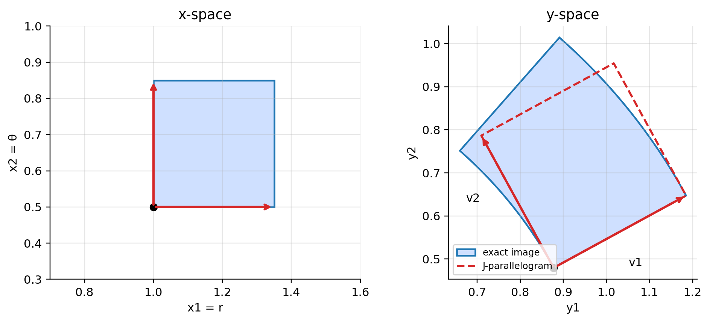
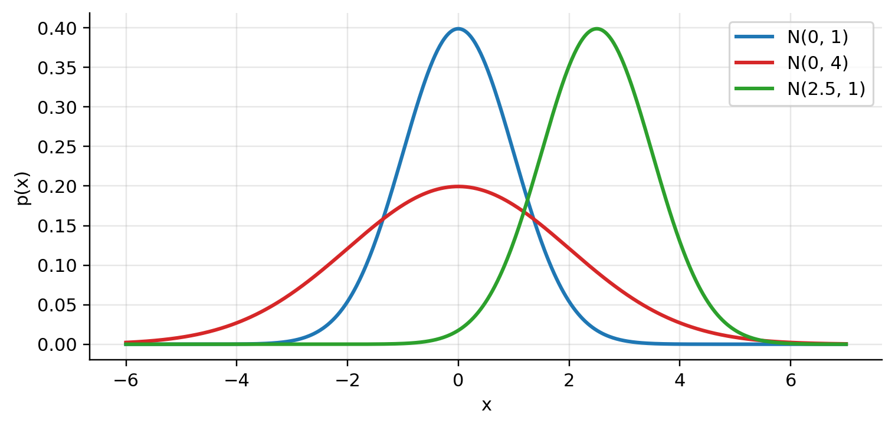
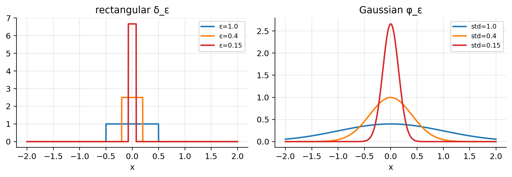
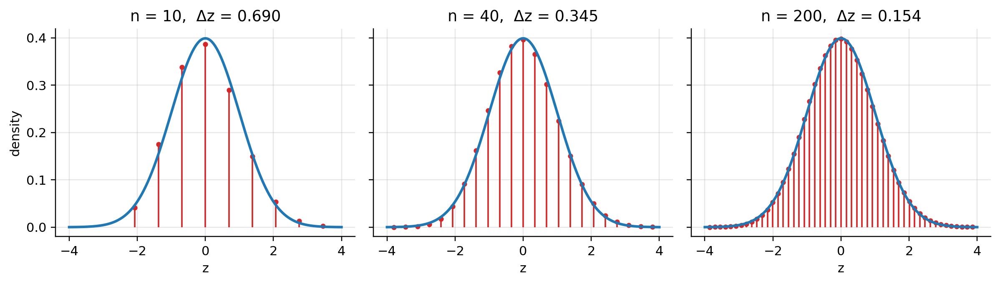

확률론의 기초 (Foundations of Probability Theory) - II
Random Signal Theory — 변수변환과 야코비안, 가우시안 확률변수·벡터, 특성함수, 중심극한정리
1 개요
이 문서는 다음 질문 하나를 축으로 전개된다.
확률변수(벡터) \(\mathbf{X}\)의 PDF를 알 때, \(\mathbf{Y} = g(\mathbf{X})\)의 PDF는 무엇인가?
답은 “확률질량은 보존되고, 부피는 \(|\det J|\)배로 변한다” 는 한 문장으로 요약된다. 이 문장을 정확히 이해하기 위해 테일러 전개, 란다우 표기, 야코비안, 행렬식의 기하학적 의미, 역함수 정리를 차례로 정리한 뒤, 그 결과를 가우시안 확률변수·확률벡터에 적용한다. 마지막으로 가우시안이 왜 그렇게 자주 등장하는지를 설명하는 중심극한정리(CLT)로 마무리한다.
| 파트 | 핵심 결과 |
|---|---|
| 1차원 변수변환 | \(f_Y(y) = f_X(g^{-1}(y))\,/\,\lvert g'(g^{-1}(y))\rvert\) |
| 다차원 변수변환 | \(f_{\mathbf{Y}}(\mathbf{y}) = f_{\mathbf{X}}(g^{-1}(\mathbf{y}))\,/\,\lvert\det J(g^{-1}(\mathbf{y}))\rvert\) |
| 가우시안 | PDF, 표준화, CF/MGF, \(\mathbb{E}[e^{aX+bX^2}]\) |
| 가우시안 벡터 | 실수/복소 PDF, 선형변환, CF, Isserlis–Wick 정리 |
| CLT | 정규화된 i.i.d. 합 \(\xrightarrow{d}\mathcal{N}(0,1)\) |
2 1차원 변수변환
2.1 CDF 방법
\(Y = g(X)\)이고 \(g:\mathbb{R}\to\mathbb{R}\)가 강한 단조(strictly monotone)이며 미분가능하다고 하자. PDF를 직접 다루기보다 CDF에서 출발하는 것이 안전하다. CDF는 확률 그 자체이므로 사건의 동치만 정확히 따지면 되기 때문이다.
증가함수인 경우. \(g\)가 증가하면 \(g(X)\le y \iff X\le g^{-1}(y)\) 이므로
\[ F_Y(y) = \Pr(g(X)\le y) = \Pr\big(X\le g^{-1}(y)\big) = F_X\big(g^{-1}(y)\big). \]
양변을 \(y\)로 미분하면 (연쇄법칙)
\[ f_Y(y) = f_X\big(g^{-1}(y)\big)\cdot\frac{d}{dy}g^{-1}(y). \]
감소함수인 경우. \(g\)가 감소하면 부등호 방향이 뒤집힌다: \(g(X)\le y \iff X\ge g^{-1}(y)\). 연속분포에서
\[ F_Y(y) = 1 - F_X\big(g^{-1}(y)\big) \quad\Longrightarrow\quad f_Y(y) = -f_X\big(g^{-1}(y)\big)\cdot\frac{d}{dy}g^{-1}(y). \]
이때 \(\frac{d}{dy}g^{-1}(y) < 0\) 이므로 우변은 양수다.
두 경우의 통합. 역함수의 미분 공식 \(\frac{d}{dy}g^{-1}(y) = 1/g'(g^{-1}(y))\) (다음 절에서 정당화)을 쓰면, 증가·감소 두 경우 모두
\[ \boxed{\,f_Y(y) = f_X\big(g^{-1}(y)\big)\cdot\frac{1}{\big|g'\big(g^{-1}(y)\big)\big|}\,} \]
로 쓸 수 있다. 절댓값은 감소함수에서 생기는 음의 부호를 흡수하여 PDF가 항상 음이 아니도록 보장한다.
2.2 기하학적 해석: 기울기가 크면 밀도는 작아진다
작은 구간 \([x, x+\Delta x]\)는 \(g\)를 거쳐 길이 \(\Delta y \approx |g'(x)|\,\Delta x\) 인 구간으로 옮겨진다. 두 구간에 들어 있는 확률질량은 같다:
\[ f_X(x)\,\Delta x \approx f_Y(y)\,\Delta y = f_Y(y)\,|g'(x)|\,\Delta x \quad\Longrightarrow\quad f_Y(y) \approx \frac{f_X(x)}{|g'(x)|}. \]
즉 \(|g'(x)|\)가 크면 짧은 구간이 길게 늘어나므로, 같은 질량이 더 넓게 퍼져 밀도가 낮아진다. PDF는 국소 기울기의 역수로 스케일된다. 이 “질량 보존 + 길이(넓이, 부피) 스케일링” 논리가 다차원으로 그대로 확장된다.
2.3 역함수의 미분과 역함수 정리 (Inverse Function Theorem)
2.3.1 공식 자체는 연쇄법칙의 귀결이다
\(g\)와 \(g^{-1}\)이 모두 미분가능하다고 가정하면, 항등식 \(g\big(g^{-1}(y)\big) = y\) 의 양변을 \(y\)로 미분하여
\[ g'\big(g^{-1}(y)\big)\cdot\frac{d}{dy}g^{-1}(y) = 1 \quad\Longrightarrow\quad \frac{d}{dy}g^{-1}(y) = \frac{1}{g'\big(g^{-1}(y)\big)}. \]
공식만 필요하다면 연쇄법칙으로 충분하다. 그런데 이 계산에는 숨은 전제가 세 개 있다.
- \(g^{-1}\)이 (적어도 국소적으로) 존재하는가?
- \(g^{-1}\)이 미분가능한가? — 미분가능하지 않으면 양변을 미분하는 것 자체가 불가능하다.
- 분모 \(g'(g^{-1}(y))\neq 0\) 인가?
이 세 가지는 증명이 필요한 명제이며, 이를 보장하는 것이 역함수 정리다.
2.3.2 정리의 정확한 진술
Important역함수 정리
\(U\subset\mathbb{R}^n\)이 열린 집합이고 \(g:U\to\mathbb{R}^n\)이 \(C^1\) 함수(도함수가 연속)라 하자. 어떤 점 \(\mathbf{x}_0\in U\)에서
\[ \det Dg(\mathbf{x}_0)\neq 0 \]
이면, \(\mathbf{x}_0\)의 열린 근방 \(U_0\)와 \(\mathbf{y}_0 = g(\mathbf{x}_0)\)의 열린 근방 \(V_0\)가 존재하여
- \(g: U_0\to V_0\) 는 전단사이고,
- \(g^{-1}: V_0\to U_0\) 는 \(C^1\) 이며,
- \(D g^{-1}(\mathbf{y}) = \big[Dg\big(g^{-1}(\mathbf{y})\big)\big]^{-1}\), \(\quad\forall\,\mathbf{y}\in V_0\).
정리의 본체는 1·2번, 즉 존재성과 매끄러움이다. 3번 공식은 1·2번이 확보된 뒤 연쇄법칙으로 따라 나오는 부산물이다.
2.3.3 왜 필요한가
정리가 답하는 질문은 다음과 같다.
한 점 \(\mathbf{x}_0\)에서의 선형대수적 정보(야코비안이 가역)만으로, 비선형 함수 \(g\) 자체가 그 근방에서 가역이라는 훨씬 강한 성질을 보장할 수 있는가?
1차원에서는 \(g'(x_0)\neq 0\) 이고 \(g'\)이 연속이면 근방에서 \(g'\)의 부호가 고정되어 \(g\)가 단조가 되고, 단조함수는 자동으로 역함수를 가진다. 존재성이 거의 공짜로 나오므로 공식만 눈에 띈다.
그러나 \(n\ge 2\)에서는 “부호가 고정된다”는 개념 자체가 없다. \(\det J\neq 0\)은 단지 그 순간의 선형근사가 퇴화하지 않았다는 뜻일 뿐, \(g\)가 근방에서 겹침 없이 매핑된다는 것은 자명하지 않다. 이 간극을 메우는 것이 역함수 정리이며, 다음과 같은 곳의 논리적 토대가 된다.
- 음함수 정리(Implicit Function Theorem)와 동치: \(g(\mathbf{x}) = \mathbf{y}\)를 \(\mathbf{x}\)에 대해 푸는 문제는 \(F(\mathbf{x},\mathbf{y}) := g(\mathbf{x})-\mathbf{y} = \mathbf{0}\)의 특수형이다. 한쪽 정리로부터 다른 쪽을 유도할 수 있다.
- 좌표변환의 정당화: 극좌표, 구면좌표 등으로 바꿔 적분할 때, 변환이 국소 미분동형사상(diffeomorphism)이어야 한다. 그 충분조건이 야코비안의 가역성이다.
- 다차원 변수변환 공식: 뒤에서 쓸 \(f_{\mathbf{Y}}(\mathbf{y}) = f_{\mathbf{X}}(g^{-1}(\mathbf{y}))/|\det J|\) 는 \(g^{-1}\)이 존재하고 미분가능해야 의미가 있다.
2.3.4 증명의 핵심 아이디어
1차원처럼 단조성으로 우회할 수 없으므로 다른 도구를 쓴다.
- \(A = Dg(\mathbf{x}_0)\) 대신 \(A^{-1}g\)를 생각하면, 일반성을 잃지 않고 \(Dg(\mathbf{x}_0) = I\)로 둘 수 있다.
- \(h(\mathbf{x}) := \mathbf{x} - g(\mathbf{x})\) 라 두면 \(Dh(\mathbf{x}_0) = 0\). \(g\in C^1\)이므로 충분히 작은 근방에서 \(\|Dh(\mathbf{x})\| \le \tfrac12\) 로 만들 수 있다.
- 방정식 \(g(\mathbf{x}) = \mathbf{y}\) 는 \(\phi_{\mathbf{y}}(\mathbf{x}) := \mathbf{y} + h(\mathbf{x})\) 의 부동점 문제와 동치다: \(\phi_{\mathbf{y}}(\mathbf{x}) = \mathbf{x} \iff g(\mathbf{x}) = \mathbf{y}\).
- 평균값 부등식에 의해 \(\|\phi_{\mathbf{y}}(\mathbf{x})-\phi_{\mathbf{y}}(\mathbf{x}')\|\le\tfrac12\|\mathbf{x}-\mathbf{x}'\|\), 즉 \(\phi_{\mathbf{y}}\)는 축소사상(contraction) 이다. 바나흐 부동점 정리가 유일한 부동점 \(\mathbf{x}(\mathbf{y}) = g^{-1}(\mathbf{y})\)의 존재를 보장한다.
- 같은 부등식으로부터 \(g^{-1}\)의 립시츠 연속성이 나오고, 이를 이용해 미분가능성과 공식 3번을 얻는다.
증명의 엔진이 부동점 정리라는 점에서, 이는 뉴턴법이 국소적으로 수렴함을 보이는 논리와 뿌리가 같다.
2.4 비단사(non-injective)인 경우
\(g\)가 단조가 아니면 하나의 \(y\)에 여러 역상 \(x_1(y), x_2(y),\dots\) 이 대응한다. 각 역상 근방에서 질량 보존을 따로 적용하고 더하면 된다:
\[ f_Y(y) = \sum_m \frac{f_X\big(x_m(y)\big)}{\big|g'\big(x_m(y)\big)\big|}. \]
예: \(Y = X^2\). \(y>0\)이면 역상은 \(\pm\sqrt{y}\), \(|g'(\pm\sqrt y)| = 2\sqrt y\) 이므로
\[ f_Y(y) = \frac{f_X(\sqrt y)+f_X(-\sqrt y)}{2\sqrt y}\,\mathbb{1}\{y>0\}. \]
3 필요한 수학 도구
3.1 테일러 전개
3.1.1 아이디어와 계수의 유도
미분가능한 함수는 한 점 근방에서 다항식으로 근사할 수 있다. \(x_0\) 근방에서
\[ f(x) \approx a_0 + a_1(x-x_0) + a_2(x-x_0)^2 + \cdots \]
라 놓고, 양변을 \(x_0\)에서 반복 미분하여 계수를 결정한다.
\[ f(x_0) = a_0,\qquad f'(x_0) = a_1,\qquad f''(x_0) = 2a_2,\qquad f'''(x_0) = 3!\,a_3,\ \dots \]
\(n\)번 미분하면 \((x-x_0)^n\) 항만 \(x=x_0\)에서 살아남고 계수 \(n!\)이 붙으므로 \(a_n = f^{(n)}(x_0)/n!\). 따라서
\[ \boxed{\,f(x) = \sum_{n=0}^{\infty}\frac{f^{(n)}(x_0)}{n!}(x-x_0)^n\,} \]
(급수가 \(f\)로 수렴하는 것은 \(f\)가 해석함수일 때이다.) 대표적인 예는
\[ e^x = \sum_{n=0}^\infty\frac{x^n}{n!},\qquad \sin x = x - \frac{x^3}{3!}+\frac{x^5}{5!}-\cdots. \]
3.1.2 1차 근사
\(x = x_0 + s\)로 쓰면
\[ f(x_0+s) = f(x_0) + s\,f'(x_0) + \frac{s^2}{2}f''(x_0)+\cdots. \]
\(s = 0.01\)이면 \(s^2 = 10^{-4}\)이다. 고차항의 기여가 급격히 줄어들므로, \(s\)가 충분히 작으면 1차항까지만 써도 좋은 근사가 된다. 이것이 1차 테일러 근사(선형화) 이며, 이 문서 전체에서 쓰이는 근사다.
3.2 란다우 표기: \(o(s)\)와 \(O(s)\)
\[ f(s) = o(s)\ \ (s\to 0) \iff \lim_{s\to 0}\frac{f(s)}{s} = 0, \qquad f(s) = O(s)\ \ (s\to 0) \iff \frac{|f(s)|}{|s|}\text{ 가 0 근방에서 유계}. \]
| 표기 | 의미 | 직관 |
|---|---|---|
| \(f(s) = O(s)\) | \(\lvert f(s)/s\rvert\) 유계 | \(s\)와 같은 속도 이하로 0에 감 |
| \(f(s) = o(s)\) | \(f(s)/s\to 0\) | \(s\)보다 엄격히 빠르게 0에 감 |
\(o(s)\)는 나머지 항의 구체적 형태는 모르지만, 1차항에 비해 무시할 수 있다는 사실만 정확히 기록하는 표기다.
Note미분가능성 자체가 \(o(\cdot)\) 선형화이다
\(f\)가 두 번 미분가능하면 나머지가 \(\frac{s^2}{2}f''(x_0)+\cdots\) 이므로 당연히 \(o(s)\)다. 하지만 \(o(s)\) 표현에는 고차 도함수가 필요 없다. 미분의 정의가 곧
\[ f(x_0+s) = f(x_0) + s f'(x_0) + o(s) \iff \lim_{s\to0}\frac{f(x_0+s)-f(x_0)}{s} = f'(x_0) \]
이기 때문이다. 다변수 함수 \(g:\mathbb{R}^n\to\mathbb{R}^m\)의 (전)미분가능성도 같은 방식으로 정의된다:
\[ g(\mathbf{x}_0+\boldsymbol{\Delta}) = g(\mathbf{x}_0) + J(\mathbf{x}_0)\,\boldsymbol{\Delta} + o(\|\boldsymbol{\Delta}\|). \]
즉 “미분가능하다”는 것은 “국소적으로 선형사상 \(J(\mathbf{x}_0)\)로 근사되고 오차가 \(o(\|\boldsymbol\Delta\|)\)이다”라는 뜻이다.
3.3 야코비안 행렬: 왜 “행 = 출력, 열 = 입력”인가
\(g:\mathbb{R}^2\to\mathbb{R}^2\), \(\ y_1 = g_1(x_1,x_2)\), \(y_2 = g_2(x_1,x_2)\) 라 하자. 주의할 점은 두 입력 \(x_1, x_2\)가 각 성분함수 \(g_1, g_2\) 모두에 들어간다는 것이다.
성분별 1차 테일러 근사. 각 \(g_i\)는 2변수 스칼라 함수이므로
\[ g_i(\mathbf{x}_0+\Delta\mathbf{x}) \approx g_i(\mathbf{x}_0) + \frac{\partial g_i}{\partial x_1}\Big|_{\mathbf{x}_0}\Delta x_1 + \frac{\partial g_i}{\partial x_2}\Big|_{\mathbf{x}_0}\Delta x_2, \qquad i = 1,2. \]
두 식을 세로로 쌓으면
\[ \begin{bmatrix} g_1(\mathbf{x}_0+\Delta\mathbf{x})\\ g_2(\mathbf{x}_0+\Delta\mathbf{x})\end{bmatrix} \approx \begin{bmatrix} g_1(\mathbf{x}_0)\\ g_2(\mathbf{x}_0)\end{bmatrix} + \underbrace{\begin{bmatrix} \partial y_1/\partial x_1 & \partial y_1/\partial x_2\\ \partial y_2/\partial x_1 & \partial y_2/\partial x_2 \end{bmatrix}_{\mathbf{x}=\mathbf{x}_0}}_{J(\mathbf{x}_0)} \begin{bmatrix}\Delta x_1\\ \Delta x_2\end{bmatrix}. \]
인덱스 배치는 행렬곱의 정의가 강제한다. 행렬-벡터 곱은 \((J\Delta\mathbf{x})_i = \sum_j J_{ij}\Delta x_j\) 로 정의된다. \(i\)번째 출력의 변화량이 \(\sum_j(\partial g_i/\partial x_j)\Delta x_j\) 이어야 하므로
\[ J_{ij} = \frac{\partial y_i}{\partial x_j} \]
일 수밖에 없다. 행 인덱스 \(i\)는 “어떤 출력인가”, 열 인덱스 \(j\)는 “어떤 입력 방향으로 미분했는가”를 나타낸다. \(i\)번째 행은 \(g_i\)의 기울기(gradient)의 전치다.
열 관점: 방향미분. 같은 사실을 열로 읽으면, \(J\)의 \(j\)번째 열은
\[ J(\mathbf{x}_0)\,\mathbf{e}_j = \lim_{h\to 0}\frac{g(\mathbf{x}_0+h\mathbf{e}_j)-g(\mathbf{x}_0)}{h} \]
즉 \(x_j\) 방향으로만 조금 움직였을 때 출력 벡터가 움직이는 방향이다. 이 열 관점이 뒤의 넓이 계산에서 핵심적으로 쓰인다.
\(p\)차원이면 \(J\)는 \(p\times p\) 행렬 \(J_{ij} = \partial y_i/\partial x_j\) 이다. 또한 \(J\)는 \(\mathbf{x}\)의 함수다. 예를 들어 \(y = x^2\)이면 \(dy/dx = 2x\)가 여전히 \(x\)에 의존하듯, 야코비안도 어느 점에서 평가하느냐에 따라 달라진다.
3.4 외적, 평행사변형, 행렬식
3.4.1 외적의 정의와 계산
3차원 벡터 \(\mathbf{u} = (u_1,u_2,u_3)^\top\), \(\mathbf{v} = (v_1,v_2,v_3)^\top\)의 외적(cross product)은
\[ \mathbf{u}\times\mathbf{v} = \det\begin{bmatrix}\mathbf{e}_1 & \mathbf{e}_2 & \mathbf{e}_3\\ u_1 & u_2 & u_3\\ v_1 & v_2 & v_3\end{bmatrix} = \begin{pmatrix} u_2v_3 - u_3v_2\\ u_3v_1 - u_1v_3\\ u_1v_2-u_2v_1\end{pmatrix}. \]
(첫 행에 기저벡터를 두는 것은 기억을 위한 형식적 표기다.) 성질은 다음과 같다.
- 방향: \(\mathbf{u}\times\mathbf{v}\)는 \(\mathbf{u}\)와 \(\mathbf{v}\) 모두에 수직이다. 직접 계산하면 \(\mathbf{u}\cdot(\mathbf{u}\times\mathbf{v}) = 0\).
- 크기: 라그랑주 항등식
\[ \|\mathbf{u}\times\mathbf{v}\|^2 = \|\mathbf{u}\|^2\|\mathbf{v}\|^2 - (\mathbf{u}\cdot\mathbf{v})^2 \]
이 성립한다 (성분을 전개하여 확인). \(\mathbf{u}\cdot\mathbf{v} = \|\mathbf{u}\|\|\mathbf{v}\|\cos\theta\) 를 대입하면
\[ \|\mathbf{u}\times\mathbf{v}\| = \|\mathbf{u}\|\,\|\mathbf{v}\|\,\sin\theta. \]
\(\|\mathbf{u}\|\)가 밑변, \(\|\mathbf{v}\|\sin\theta\)가 높이이므로, 외적의 크기는 두 벡터가 만드는 평행사변형의 넓이다.
3.4.2 2차원: 넓이 \(= |\det[\mathbf{v}_1\ \mathbf{v}_2]|\) (부호와 무관한 증명)
\(\mathbf{v}_1 = (a,b)^\top\), \(\mathbf{v}_2 = (c,d)^\top\) 라 하자. 평행사변형 넓이는 밑변 × 높이 \(= \|\mathbf{v}_1\|\|\mathbf{v}_2\|\sin\theta\) 이므로
\[ \begin{aligned} \text{Area}^2 &= \|\mathbf{v}_1\|^2\|\mathbf{v}_2\|^2\sin^2\theta = \|\mathbf{v}_1\|^2\|\mathbf{v}_2\|^2 - (\mathbf{v}_1\cdot\mathbf{v}_2)^2\\ &= (a^2+b^2)(c^2+d^2) - (ac+bd)^2\\ &= a^2d^2 + b^2c^2 - 2abcd = (ad-bc)^2. \end{aligned} \]
따라서
\[ \boxed{\,\text{Area} = |ad-bc| = \left|\det\begin{bmatrix}a & c\\ b & d\end{bmatrix}\right| = |\det[\mathbf{v}_1\ \mathbf{v}_2]|\,} \]
이 유도는 성분의 부호에 대해 어떤 가정도 하지 않는다. (큰 직사각형에서 삼각형을 빼는 그림 증명은 모든 성분이 양수인 배치에서만 그대로 성립하므로 일반 증명이 아니다.)
같은 결과를 외적으로 보면, 2차원 벡터를 \((a,b,0)^\top\), \((c,d,0)^\top\)로 3차원에 올려 외적을 취할 때
\[ (a,b,0)^\top\times(c,d,0)^\top = (0,\ 0,\ ad-bc)^\top \]
이므로 크기 \(|ad-bc|\)가 곧 행렬식의 절댓값이다. 즉 외적의 크기와 행렬식은 같은 기하학적 대상(평행사변형 넓이)을 계산하는 두 가지 방법이다.
3.4.3 부호의 의미: 방향(orientation)
\(\det[\mathbf{v}_2\ \mathbf{v}_1] = -\det[\mathbf{v}_1\ \mathbf{v}_2]\) 이다. 넓이는 같지만 부호가 반전된다.
- \(\det>0\): \(\mathbf{v}_1\)에서 \(\mathbf{v}_2\)로 반시계 방향 (방향 보존)
- \(\det<0\): 시계 방향 (방향 반전, 거울상)
넓이는 음수가 될 수 없으므로 변수변환 공식에는 \(|\det|\)가 들어간다.
3.4.4 왜 “행렬식 = 부호 있는 부피”인가 (공리적 관점)
부호 있는 넓이 함수 \(A(\mathbf{v}_1,\mathbf{v}_2)\)가 만족해야 할 성질을 나열하면
- 각 인자에 선형: 한 변을 \(c\)배 하면 넓이도 \(c\)배. 한 변에 다른 변의 배수를 더해도(층밀리기, shear) 밑변과 높이가 그대로이므로 넓이 불변.
- 교대성: \(A(\mathbf{v},\mathbf{v}) = 0\) (납작한 평행사변형).
- 정규화: \(A(\mathbf{e}_1,\mathbf{e}_2) = 1\) (단위정사각형).
이 세 성질을 만족하는 함수는 유일하며 그것이 행렬식이다. \(n\)차원에서도 동일하여, \(\det[\mathbf{v}_1\ \cdots\ \mathbf{v}_n]\)는 \(n\)개 열벡터가 만드는 평행체의 부호 있는 부피다. 또한 곱셈 성질 \(\det(AB) = \det A\,\det B\) 는 “선형사상 \(B\)로 부피가 \(|\det B|\)배, 이어서 \(A\)로 \(|\det A|\)배”라는 기하학적 사실의 대수적 표현이다.
4 2차원 변수변환: 국소 선형화에서 밀도 변환까지
4.1 설정
\(\mathbf{y} = g(\mathbf{x})\), \(\ \mathbf{x},\mathbf{y}\in\mathbb{R}^2\), \(g\)는 미분가능하고 국소적으로 일대일이라 하자. \(\mathbf{x}\)-공간에서 \(\mathbf{x}_0 = (x_{01},x_{02})^\top\)를 한 꼭짓점으로 하는 작은 직사각형(셀)을 잡는다. 두 변은
\[ \mathbf{e}_1\Delta x_1 = \begin{bmatrix}\Delta x_1\\0\end{bmatrix},\qquad \mathbf{e}_2\Delta x_2 = \begin{bmatrix}0\\\Delta x_2\end{bmatrix} \]
이다. 질문은 이것이다: 이 두 변은 \(g\)를 거친 뒤 \(\mathbf{y}\)-공간에서 무엇이 되는가?
4.2 변의 매개화와 상(image) 곡선
첫 번째 변(아랫변)은 \(x_2\)를 고정하고 \(x_1\)만 움직인 것이다. 스칼라 매개변수 \(s\)로
\[ \gamma_1(s) = \mathbf{x}_0 + s\,\mathbf{e}_1 = \begin{bmatrix}x_{01}\\x_{02}\end{bmatrix} + s\begin{bmatrix}1\\0\end{bmatrix},\qquad 0\le s\le\Delta x_1. \]
이 선분 위의 모든 점에 \(g\)를 적용하면 \(\mathbf{y}\)-공간의 곡선
\[ \mathbf{y}(s) = g\big(\gamma_1(s)\big) = g(\mathbf{x}_0 + s\,\mathbf{e}_1) \]
을 얻는다. \(\mathbf{x}\)-공간에서는 직선이었지만 \(g\)가 비선형이므로 상은 일반적으로 곡선이다.
4.3 접선벡터: 연쇄법칙
\(\mathbf{y}\)는 2차원, \(s\)는 스칼라이므로 \(d\mathbf{y}/ds = (dy_1/ds,\ dy_2/ds)^\top\) 이다. 성분별로 연쇄법칙을 적용하면, \(\mathbf{z} = \mathbf{x}_0+s\mathbf{e}_1\)로 두고
\[ \frac{dy_i}{ds} = \sum_{j=1}^{2}\frac{\partial g_i}{\partial z_j}\,\frac{dz_j}{ds},\qquad i=1,2. \]
\(\frac{d\mathbf{z}}{ds} = \mathbf{e}_1\) (\(\mathbf{x}_0\)는 \(s\)에 대해 상수)이므로, 행렬로 묶으면
\[ \frac{d\mathbf{y}}{ds} = J(\mathbf{x}_0+s\mathbf{e}_1)\,\mathbf{e}_1, \qquad \mathbf{y}'(0) = J(\mathbf{x}_0)\,\mathbf{e}_1. \]
\(J(\mathbf{x}_0)\mathbf{e}_1\)은 \(J(\mathbf{x}_0)\)의 첫 번째 열이며, \(x_1\)축 방향으로의 방향미분이다. 미분가능성의 정의에 의해
\[ \mathbf{y}(s) = g(\mathbf{x}_0 + s\mathbf{e}_1) = g(\mathbf{x}_0) + s\,J(\mathbf{x}_0)\mathbf{e}_1 + o(s). \]
여기서 \(o(s)\)는 \(s\)에 비해 빠르게 사라지는 나머지다(§란다우 표기: \(o(s)\)와 \(O(s)\)). 즉 상 곡선은 출발점 근방에서 기울기 \(J(\mathbf{x}_0)\mathbf{e}_1\)인 직선처럼 보인다.
4.4 변 벡터의 근사
\(\mathbf{y}\)-공간에서 첫 번째 변의 정확한 변위는 미적분학의 기본정리에 의해
\[ \mathbf{v}_1 = g(\mathbf{x}_0+\Delta x_1\mathbf{e}_1) - g(\mathbf{x}_0) = \int_0^{\Delta x_1} J(\mathbf{x}_0+s\mathbf{e}_1)\,\mathbf{e}_1\,ds. \]
변이 매우 짧으면 적분 구간에서 \(J(\mathbf{x}_0+s\mathbf{e}_1)\approx J(\mathbf{x}_0)\) 이고, 이는 \(s\)에 무관한 상수가 되어
\[ \mathbf{v}_1 \approx J(\mathbf{x}_0)\,\mathbf{e}_1\,\Delta x_1. \]
\(x_2\) 방향 변에 대해서도 똑같이
\[ \mathbf{v}_2 = g(\mathbf{x}_0+\Delta x_2\mathbf{e}_2) - g(\mathbf{x}_0)\approx J(\mathbf{x}_0)\,\mathbf{e}_2\,\Delta x_2. \]
즉 각 작은 변은 근사적으로 \(J(\mathbf{x}_0)\)의 첫째·둘째 열을 \(\Delta x_1\), \(\Delta x_2\)만큼 스케일한 직선 벡터로 옮겨진다. 휘어진 곡선도 충분히 작게 보면 직선이다.
4.5 상 셀의 넓이
선형사상은 직사각형을 평행사변형으로 보낸다. 따라서 작은 셀의 상 \(R_{\mathbf{y}}\)는 \(\mathbf{v}_1,\mathbf{v}_2\)가 만드는 평행사변형으로 근사되며, 그 넓이는 \(|\det[\mathbf{v}_1\ \mathbf{v}_2]|\) 이다.
이제 행렬식을 계산한다. 스칼라 \(\Delta x_1,\Delta x_2\)를 열 밖으로 빼면
\[ [\mathbf{v}_1\ \mathbf{v}_2] = \big[J(\mathbf{x}_0)\mathbf{e}_1\Delta x_1\ \ J(\mathbf{x}_0)\mathbf{e}_2\Delta x_2\big] = J(\mathbf{x}_0)\,\underbrace{[\mathbf{e}_1\ \mathbf{e}_2]}_{I}\, \begin{bmatrix}\Delta x_1 & 0\\ 0 & \Delta x_2\end{bmatrix}. \]
\(\det(ABC) = \det A\det B\det C\) 를 적용하면
\[ \det[\mathbf{v}_1\ \mathbf{v}_2] = \det J(\mathbf{x}_0)\cdot 1\cdot\Delta x_1\Delta x_2, \]
\[ \boxed{\,\text{Area}(R_{\mathbf{y}}) \approx |\det J(\mathbf{x}_0)|\,\Delta x_1\Delta x_2 \qquad\Longrightarrow\qquad dy_1\,dy_2 = |\det J(\mathbf{x}_0)|\,dx_1\,dx_2\,} \]
야코비안 행렬식의 절댓값은 \(g\)에 의한 국소 넓이 확대·축소 비율 이다. \(\det J\)의 부호는 방향(orientation)을 나타내며, 넓이에는 절댓값을 쓴다.
4.6 질량 보존으로부터 밀도 변환
1차원에서 \(\Pr\{x_0\le X\le x_0+dx\}\approx f_X(x_0)\,dx\) (높이 × 폭)였듯, 2차원에서 작은 셀에 담긴 확률질량은 (밀도 높이) × (셀 넓이) 이다. 셀과 그 상에는 같은 사건이 대응하므로 확률질량이 같다:
\[ \Pr\{\mathbf{X}\in d\mathbf{x}\}\approx f_{\mathbf{X}}(\mathbf{x}_0)\,dx_1dx_2 = \Pr\{\mathbf{Y}\in d\mathbf{y}\}\approx f_{\mathbf{Y}}(\mathbf{y}_0)\,dy_1dy_2, \qquad \mathbf{y}_0 = g(\mathbf{x}_0). \]
\(dy_1dy_2 = |\det J(\mathbf{x}_0)|\,dx_1dx_2\) 를 대입하고 \(dx_1dx_2\)를 소거하면
\[ f_{\mathbf{Y}}(\mathbf{y}_0)\,|\det J(\mathbf{x}_0)| \approx f_{\mathbf{X}}(\mathbf{x}_0). \]
셀 크기를 0으로 보내고, 우변을 \(\mathbf{y}\)만의 식으로 쓰기 위해 \(\mathbf{x} = g^{-1}(\mathbf{y})\) 를 대입하면
\[ \boxed{\,f_{\mathbf{Y}}(\mathbf{y}) = \frac{f_{\mathbf{X}}\big(g^{-1}(\mathbf{y})\big)}{\big|\det J\big(g^{-1}(\mathbf{y})\big)\big|}\,} \]
해석: \(\mathbf{y}\)를 \(\mathbf{x} = g^{-1}(\mathbf{y})\)로 되돌려 원래 밀도를 읽고, 국소 넓이 인자 \(1/|\det J|\)로 스케일한다. 1차원 공식의 \(|g'|\)이 \(|\det J|\)로 바뀐 것이 전부다. 도함수가 이제 \(2\times 2\) 행렬이므로, 그 행렬의 “크기” 역할을 하는 것이 행렬식이다.
4.7 Sanity check: 선형사상 \(\mathbf{Y} = A\mathbf{X}\)
Sanity check는 복잡한 논증으로 얻은 일반 공식을, 독립적으로 답을 알 수 있는 가장 단순한 경우에 대입해 모순이 없는지 확인하는 절차다. 위 유도는 테일러 근사, 극한 등 여러 단계를 거쳤으므로 어딘가에서 실수했을 가능성을 점검할 필요가 있다.
\(g(\mathbf{x}) = A\mathbf{x}\) (\(A\)는 가역 \(2\times2\))이면 \(J(\mathbf{x})\equiv A\) 이고 \(g^{-1}(\mathbf{y}) = A^{-1}\mathbf{y}\) 이므로 일반 공식은
\[ f_{\mathbf{Y}}(\mathbf{y}) = \frac{f_{\mathbf{X}}(A^{-1}\mathbf{y})}{|\det A|}. \]
한편 선형대수만으로 독립적으로 확인할 수 있다: \(A\)는 단위정사각형을 열벡터가 \(A\)의 열인 평행사변형으로 보내므로 넓이를 정확히 \(|\det A|\)배 한다. 임의의 영역은 작은 정사각형들로 분할할 수 있으므로 모든 영역의 넓이가 \(|\det A|\)배가 된다(선형사상이므로 근사가 아니라 정확). 확률질량이 보존되려면 밀도는 \(1/|\det A|\)배가 되어야 한다. 두 경로의 답이 완전히 일치한다.
단순한 경우를 통과했다고 일반 공식이 증명되는 것은 아니지만, 명백한 오류가 없다는 신뢰를 준다. 복잡한 유도 뒤에 항상 해 볼 만한 습관이다.
5 \(p\)차원 일반화
5.1 국소 부피 스케일링
\(g:\mathbb{R}^p\to\mathbb{R}^p\)가 미분가능하고 국소적으로 일대일이면, 작은 \(p\)차원 직육면체 \(dx_1\times\cdots\times dx_p\)는
\[ \mathbf{v}_i\approx J(\mathbf{x}_0)\,\mathbf{e}_i\,\Delta x_i,\qquad i=1,\dots,p \]
가 만드는 평행체로 옮겨진다. 2차원과 똑같은 인수분해로
\[ \text{Vol}(R_{\mathbf{y}})\approx|\det[\mathbf{v}_1\ \cdots\ \mathbf{v}_p]| = \Big|\det\Big(J(\mathbf{x}_0)\,I\,\operatorname{diag}(\Delta x_1,\dots,\Delta x_p)\Big)\Big| = |\det J(\mathbf{x}_0)|\prod_{i=1}^p\Delta x_i, \]
\[ dy_1\cdots dy_p = |\det J(\mathbf{x}_0)|\,dx_1\cdots dx_p. \]
5.2 밀도 변환 공식
작은 \(p\)-셀에서의 질량 보존으로부터
\[ \boxed{\,f_{\mathbf{Y}}(\mathbf{y}) = \frac{f_{\mathbf{X}}\big(g^{-1}(\mathbf{y})\big)}{\big|\det J\big(g^{-1}(\mathbf{y})\big)\big|}\,} \]
여기서 \(J\)는 \(p\times p\) 야코비안이며 \(\mathbf{x}\)의 함수다. 따라서 먼저 \(g^{-1}(\mathbf{y})\)를 구해 그 점에서 \(J\)를 평가한 뒤 행렬식을 취해 분모에 넣고, 분자에는 같은 점에서의 \(f_{\mathbf{X}}\) 값을 넣는다.
비단사 경우. \(g\)가 서로 겹치지 않는 영역 \(\{R_m\}\) 위에서 \(k\)대1이면, 각 역상 가지(branch)의 기여를 더한다:
\[ f_{\mathbf{Y}}(\mathbf{y}) = \sum_m\frac{f_{\mathbf{X}}\big(\mathbf{x}_m(\mathbf{y})\big)}{\big|\det J\big(\mathbf{x}_m(\mathbf{y})\big)\big|}, \qquad \mathbf{x}_m(\mathbf{y})\in R_m,\ \ g\big(\mathbf{x}_m(\mathbf{y})\big) = \mathbf{y}. \]
6 가우시안 확률변수
6.1 PDF와 모수
\(X\sim\mathcal{N}(m,\sigma^2)\)의 PDF는
\[ p_X(x) = \frac{1}{\sqrt{2\pi\sigma^2}}\exp\!\left(-\frac{(x-m)^2}{2\sigma^2}\right),\qquad\sigma^2>0. \]
- \(m = \mathbb{E}[X]\) (평균): 곡선의 중심(위치)을 옮긴다.
- \(\sigma^2 = \operatorname{Var}(X)\) (분산): 퍼짐을 조절한다. \(\sigma\)가 크면 넓고 낮은 종, 작으면 좁고 뾰족한 종.
- 중심에서 멀어질수록 밀도가 \(e^{-(x-m)^2/2\sigma^2}\)로 급격히 감소하므로, 큰 편차가 나올 확률은 매우 작다.

6.1.1 정규화 상수의 증명: 극좌표와 야코비안
\(I := \int_{-\infty}^{\infty}e^{-x^2/2}dx\) 라 두면
\[ I^2 = \int_{-\infty}^{\infty}\!\!\int_{-\infty}^{\infty}e^{-(x^2+y^2)/2}\,dx\,dy. \]
\(x = r\cos\theta\), \(y = r\sin\theta\) 로 변수변환한다. 야코비안은
\[ J = \begin{bmatrix}\partial x/\partial r & \partial x/\partial\theta\\ \partial y/\partial r & \partial y/\partial\theta\end{bmatrix} = \begin{bmatrix}\cos\theta & -r\sin\theta\\ \sin\theta & r\cos\theta\end{bmatrix}, \qquad \det J = r. \]
따라서 \(dx\,dy = r\,dr\,d\theta\) (앞의 그림에서 본 \(r\Delta r\Delta\theta\) 그대로)이고
\[ I^2 = \int_0^{2\pi}\!\!\int_0^\infty e^{-r^2/2}\,r\,dr\,d\theta = 2\pi\Big[-e^{-r^2/2}\Big]_0^\infty = 2\pi, \qquad I = \sqrt{2\pi}. \]
\(u = (x-m)/\sigma\) 치환(\(dx = \sigma\,du\))으로 \(\int p_X(x)dx = \frac{1}{\sqrt{2\pi}}\int e^{-u^2/2}du = 1\) 이 확인된다.
6.2 아핀 변환과 표준화
아핀 변환. \(Y = aX+b\) (\(a\neq 0\))이면 1차원 변수변환 공식에서 \(g^{-1}(y) = (y-b)/a\), \(|g'| = |a|\) 이므로
\[ p_Y(y) = \frac{1}{|a|}\cdot\frac{1}{\sqrt{2\pi\sigma^2}}\exp\!\left(-\frac{\big(\frac{y-b}{a}-m\big)^2}{2\sigma^2}\right) = \frac{1}{\sqrt{2\pi a^2\sigma^2}}\exp\!\left(-\frac{\big(y-(am+b)\big)^2}{2a^2\sigma^2}\right). \]
즉 \(Y\sim\mathcal{N}(am+b,\ a^2\sigma^2)\). 가우시안은 아핀 변환에 대해 닫혀 있다.
표준화(Z-변환). \(a = 1/\sigma\), \(b = -m/\sigma\) 로 두면
\[ Z = \frac{X-m}{\sigma}\sim\mathcal{N}(0,1). \]
직접 확인하면 \(\mathbb{E}[Z] = (\mathbb{E}[X]-m)/\sigma = 0\), \(\operatorname{Var}(Z) = \mathbb{E}[Z^2] = \mathbb{E}[(X-m)^2]/\sigma^2 = 1\).
6.3 CDF와 Q-함수
표준정규 \(Z\sim\mathcal{N}(0,1)\)의 PDF와 CDF를
\[ \varphi(z) = \frac{1}{\sqrt{2\pi}}e^{-z^2/2},\qquad \Phi(z) = \Pr[Z\le z] = \int_{-\infty}^{z}\varphi(t)\,dt \]
로 쓴다. 꼬리확률(CCDF)은 통신 분야에서 특히 자주 쓰이며
\[ Q(z) = \Pr[Z>z] = 1-\Phi(z) = \int_z^\infty\varphi(t)\,dt. \]
\(\varphi\)가 우함수이므로 대칭성 \(\Phi(-z) = 1-\Phi(z) = Q(z)\) 가 성립한다. 일반 가우시안은 표준화를 통해
\[ \Pr[X\le x] = \Phi\!\left(\frac{x-m}{\sigma}\right),\qquad \Pr[X>x] = Q\!\left(\frac{x-m}{\sigma}\right). \]
6.4 MGF와 특성함수
6.4.1 MGF의 유도: 완전제곱
\[ M_X(s) = \mathbb{E}[e^{sX}] = \frac{1}{\sqrt{2\pi}\sigma}\int_{-\infty}^{\infty}\exp\!\left(sx-\frac{(x-m)^2}{2\sigma^2}\right)dx. \]
지수를 \(x\)에 대해 완전제곱한다.
\[ \begin{aligned} sx-\frac{(x-m)^2}{2\sigma^2} &= -\frac{1}{2\sigma^2}\Big[x^2-2(m+\sigma^2s)x+m^2\Big]\\ &= -\frac{1}{2\sigma^2}\Big[\big(x-(m+\sigma^2 s)\big)^2 - (m+\sigma^2s)^2 + m^2\Big]\\ &= -\frac{\big(x-(m+\sigma^2s)\big)^2}{2\sigma^2} + ms + \frac{\sigma^2s^2}{2}. \end{aligned} \]
마지막 줄은 \((m+\sigma^2s)^2-m^2 = 2m\sigma^2s+\sigma^4s^2\) 를 이용했다. \(x\)와 무관한 항을 적분 밖으로 빼면, 남은 적분은 평균 \(m+\sigma^2s\), 분산 \(\sigma^2\)인 가우시안 PDF의 전체 적분 \(=1\) 이다. 따라서
\[ \boxed{\,M_X(s) = \exp\!\left(ms+\tfrac12\sigma^2s^2\right)\,} \]
6.4.2 특성함수
\[ \Phi_X(jv) = \mathbb{E}[e^{jvX}] = \exp\!\left(jmv-\tfrac12\sigma^2v^2\right). \]
유도는 \(s\to jv\)로 같은 완전제곱을 하면 되지만, 이 경우 “평균” 자리에 복소수 \(m+j\sigma^2v\)가 온다. 복소수만큼 이동한 가우시안의 적분
\[ \int_{-\infty}^{\infty}\exp\!\left(-\frac{(x-c)^2}{2\sigma^2}\right)dx = \sqrt{2\pi}\sigma,\qquad c\in\mathbb{C} \]
이 여전히 성립한다는 것은, \(e^{-z^2/2\sigma^2}\)가 전해석함수이고 \(|\operatorname{Re}z|\to\infty\)에서 빠르게 감소하므로 적분 경로를 실수축에서 \(\operatorname{Im}z = \operatorname{Im}c\) 인 수평선으로 옮겨도 값이 변하지 않는다는 코시 정리로 정당화된다. (또는 \(M_X(s)\)와 \(\mathbb{E}[e^{sX}]\)가 모두 복소평면 전체에서 해석적이므로 해석적 연속으로 \(s = jv\)를 대입해도 된다.)
| 항 | 담고 있는 모수 | 의미 |
|---|---|---|
| \(jmv\) | 평균 \(m\) | 위치 |
| \(-\frac12\sigma^2v^2\) | 분산 \(\sigma^2\) | 퍼짐 |
가우시안 PDF의 지수가 \(x\)의 2차식이므로, 완전제곱 후 나머지도 \(s\)(또는 \(v\))의 1차 + 2차식으로 깔끔하게 떨어진다.
6.4.3 모멘트
MGF를 0에서 미분하면
\[ M_X'(s) = (m+\sigma^2s)M_X(s),\qquad M_X''(s) = \big[\sigma^2+(m+\sigma^2s)^2\big]M_X(s), \]
\[ \mathbb{E}[X] = M_X'(0) = m,\qquad \mathbb{E}[X^2] = M_X''(0) = m^2+\sigma^2,\qquad \operatorname{Var}(X) = \sigma^2. \]
또한 임의의 실수 \(a\)에 대해 \(\mathbb{E}[e^{aX}] = M_X(a) = \exp(am+\tfrac12a^2\sigma^2)\).
6.5 응용: \(\mathbb{E}\big[e^{aX+bX^2}\big]\)
\(X\sim\mathcal{N}(m,\sigma^2)\), \(a,b\in\mathbb{R}\)일 때
\[ \mathbb{E}\big[e^{aX+bX^2}\big] = \frac{1}{\sqrt{2\pi}\sigma}\int_{-\infty}^{\infty}\exp\!\left(ax+bx^2-\frac{(x-m)^2}{2\sigma^2}\right)dx \]
를 구한다. 전략은 MGF와 같다: 지수를 완전제곱하여 표준정규 적분으로 환원한다.
6.5.1 항 정리와 완전제곱
\[ ax+bx^2-\frac{(x-m)^2}{2\sigma^2} = -\frac{1}{2\sigma^2}\Big\{(1-2b\sigma^2)x^2-2(m+a\sigma^2)x+m^2\Big\}. \]
\(x^2\)의 계수가 \((1-2b\sigma^2)\) 이므로 이를 묶어내고 완전제곱하면
\[ = -\frac{1}{2\sigma^2}\Big\{(1-2b\sigma^2)\big[x-\mu^\star\big]^2 + C\Big\}, \qquad \mu^\star = \frac{m+a\sigma^2}{1-2b\sigma^2}, \qquad C = -\frac{(m+a\sigma^2)^2}{1-2b\sigma^2}+m^2. \]
지수의 합은 지수함수의 곱이므로
\[ \exp\!\left(ax+bx^2-\frac{(x-m)^2}{2\sigma^2}\right) = \exp\!\left(-\frac{1-2b\sigma^2}{2\sigma^2}\big[x-\mu^\star\big]^2\right)\cdot \exp\!\left(\boxed{-}\,\frac{C}{2\sigma^2}\right). \]
Warning부호 주의
\(-\frac{1}{2\sigma^2}\)은 중괄호 전체에 곱해지므로 상수항 \(C\)에도 곱해진다. 두 번째 인수는 \(\exp\!\big(-\tfrac{C}{2\sigma^2}\big)\) 이다. \(\exp\!\big(+\tfrac{C}{2\sigma^2}\big)\) 로 쓰면 최종 결과의 부호가 뒤집힌다. 아래 특수경우 검증에서 이를 다시 확인한다.
6.5.2 유효 분산과 변수치환
\(x\)와 무관한 인수를 적분 밖으로 빼면
\[ \mathbb{E}\big[e^{aX+bX^2}\big] = e^{-C/2\sigma^2}\cdot\frac{1}{\sqrt{2\pi}\sigma}\int_{-\infty}^{\infty}\exp\!\left(-\frac{1-2b\sigma^2}{2\sigma^2}\big[x-\mu^\star\big]^2\right)dx. \]
수렴 조건. 적분이 수렴하려면 \(1-2b\sigma^2>0\), 즉 \(b<\frac{1}{2\sigma^2}\) 이어야 한다. 남은 피적분함수를 가우시안 커널 \(\exp\!\big(-\frac{(x-\mu^\star)^2}{2\sigma_{\text{eff}}^2}\big)\) 와 비교하면
\[ \sigma_{\text{eff}}^2 = \frac{\sigma^2}{1-2b\sigma^2} \]
이므로, 수렴 조건은 유효 분산이 양수라는 조건이다. \(b\ge\frac{1}{2\sigma^2}\)이면 지수가 \(|x|\to\infty\)에서 감소하지 않아 기댓값이 \(+\infty\)로 발산한다.
\(\alpha\)를 잡는 기준. 목표는 지수를 표준정규의 \(-\alpha^2/2\) 꼴로 만드는 것이다.
\[ -\frac{1-2b\sigma^2}{2\sigma^2}\big[x-\mu^\star\big]^2 = -\frac{\alpha^2}{2} \quad\Longrightarrow\quad \alpha = \frac{x-\mu^\star}{\sigma/\sqrt{1-2b\sigma^2}} = \frac{x-\mu^\star}{\sigma_{\text{eff}}}. \]
이는 평균 \(\mu^\star\), 표준편차 \(\sigma_{\text{eff}}\)인 가우시안의 표준화 변수와 같은 구조다. \(dx = \sigma_{\text{eff}}\,d\alpha = \frac{\sigma}{\sqrt{1-2b\sigma^2}}d\alpha\) 이므로
\[ \frac{1}{\sqrt{2\pi}\sigma}\int_{-\infty}^{\infty}e^{-\alpha^2/2}\,\frac{\sigma}{\sqrt{1-2b\sigma^2}}\,d\alpha = \frac{1}{\sqrt{1-2b\sigma^2}}\cdot\underbrace{\frac{1}{\sqrt{2\pi}}\int_{-\infty}^\infty e^{-\alpha^2/2}d\alpha}_{=1} = \frac{1}{\sqrt{1-2b\sigma^2}}. \]
6.5.3 결과
\(C\)를 대입하면 \(-\frac{C}{2\sigma^2} = \frac{(m+a\sigma^2)^2}{2\sigma^2(1-2b\sigma^2)}-\frac{m^2}{2\sigma^2}\) 이므로, \(1-2b\sigma^2>0\) 에서
\[ \boxed{\,\mathbb{E}\big[e^{aX+bX^2}\big] = \frac{1}{\sqrt{1-2b\sigma^2}}\exp\!\left\{\frac{(m+a\sigma^2)^2}{2\sigma^2(1-2b\sigma^2)}-\frac{m^2}{2\sigma^2}\right\}\,} \]
6.5.4 특수경우와 부호 검증
| 경우 | 결과 |
|---|---|
| \(b = 0\) | \(\exp\!\big(am+\tfrac12a^2\sigma^2\big) = M_X(a)\) ✓ |
| \(a = 0\) | \(\dfrac{1}{\sqrt{1-2b\sigma^2}}\exp\!\left(\dfrac{bm^2}{1-2b\sigma^2}\right)\) |
| \(a = 0,\ m = 0\) | \(\dfrac{1}{\sqrt{1-2b\sigma^2}}\) |
| \(m = 0\) | \(\dfrac{1}{\sqrt{1-2b\sigma^2}}\exp\!\left(\dfrac{a^2\sigma^2}{2(1-2b\sigma^2)}\right)\) |
\(b = 0\)을 대입하면 \(\frac{(m+a\sigma^2)^2-m^2}{2\sigma^2} = am+\frac{a^2\sigma^2}{2}\) 로 이미 알고 있는 MGF가 정확히 복원된다. 만약 \(\exp(+C/2\sigma^2)\) 를 썼다면 \(b=0\)에서 \(\exp(-am-\frac12a^2\sigma^2)\) 가 나와 MGF와 모순된다. 특수경우 대입은 부호 오류를 잡는 가장 싼 sanity check 이다.
\(a = 0\) 경우는 \(\frac{m^2}{2\sigma^2}\Big(\frac{1}{1-2b\sigma^2}-1\Big) = \frac{m^2}{2\sigma^2}\cdot\frac{2b\sigma^2}{1-2b\sigma^2} = \frac{bm^2}{1-2b\sigma^2}\) 로부터 얻는다.
7 특성함수와 푸리에 변환
7.1 부호 관례와 역변환 공식
신호처리의 표준 푸리에 쌍은
\[ \hat f(\omega) = \int_{-\infty}^\infty f(x)\,e^{-j\omega x}\,dx \qquad\longleftrightarrow\qquad f(x) = \frac{1}{2\pi}\int_{-\infty}^\infty\hat f(\omega)\,e^{+j\omega x}\,d\omega. \]
특성함수는 지수의 부호가 반대다:
\[ \varphi_X(jv) := \mathbb{E}[e^{jvX}] = \int_{-\infty}^\infty p_X(x)\,e^{+jvx}\,dx = \mathcal{F}\{p_X\}(-v). \]
즉 특성함수는 주파수 축을 뒤집은 푸리에 변환이다. 표준 역변환에서 \(\omega = -v\)로 치환하면 (\(d\omega = -dv\), 적분 한계가 뒤집혀 부호가 상쇄)
\[ p_X(x) = \frac{1}{2\pi}\int_{-\infty}^{\infty}\mathcal{F}\{p_X\}(\omega)\,e^{j\omega x}d\omega = \frac{1}{2\pi}\int_{-\infty}^{\infty}\varphi_X(jv)\,e^{-jvx}\,dv. \]
| 지수 부호 | 역할 | |
|---|---|---|
| 표준 푸리에 변환 | \(e^{-j\omega x}\) | \(p_X\to\hat p_X\) |
| 특성함수 | \(e^{+jvx}\) | 주파수 축 반전 (\(\omega\to -v\)) |
| 특성함수의 역변환 | \(e^{-jvx}\) | 반전을 되돌려 \(p_X\) 복원 |
주파수 축 반전은 일대일 대응이므로 유일성, 컨볼루션 정리 등 구조적 성질은 그대로 유지된다. 다만 푸리에 쌍 표를 가져다 쓸 때는 \(v\to -v\) 치환을 잊지 않아야 한다. 가우시안처럼 \(p_X\)가 원점 대칭이면 특성함수가 실수 우함수가 되어 부호 차이가 드러나지 않으므로 특히 주의한다.
7.2 푸리에 역변환 정리의 증명
역변환 공식은 증명할 수 있는 정리다. 가장 정직한 경로는 가우시안 정칙화(regularization) 이다. \(f\in L^1\) 이라 하고, 수렴을 보장하는 감쇠 인자를 붙인
\[ I_\epsilon(x) := \frac{1}{2\pi}\int_{-\infty}^\infty\hat f(\omega)\,e^{j\omega x}\,e^{-\epsilon\omega^2/2}\,d\omega,\qquad\epsilon>0 \]
를 생각한다.
1단계: 순서 교환. \(\hat f\)를 정의로 펼친다. \(\int\!\!\int|f(t)|e^{-\epsilon\omega^2/2}\,dt\,d\omega<\infty\) 이므로 푸비니 정리로 적분 순서를 바꿀 수 있다:
\[ I_\epsilon(x) = \int_{-\infty}^\infty f(t)\left[\frac{1}{2\pi}\int_{-\infty}^\infty e^{j\omega(x-t)-\epsilon\omega^2/2}\,d\omega\right]dt. \]
2단계: 안쪽 적분은 가우시안. 위 MGF/CF 계산과 같은 완전제곱으로
\[ \frac{1}{2\pi}\int_{-\infty}^\infty e^{j\omega u-\frac{\epsilon}{2}\omega^2}\,d\omega = \frac{1}{2\pi}\sqrt{\frac{2\pi}{\epsilon}}\,e^{-u^2/2\epsilon} = \frac{1}{\sqrt{2\pi\epsilon}}\,e^{-u^2/2\epsilon} =: \phi_\epsilon(u). \]
\(\phi_\epsilon\)은 평균 0, 분산 \(\epsilon\)인 가우시안 PDF다.
3단계: 컨볼루션. 따라서 \(I_\epsilon(x) = \int f(t)\,\phi_\epsilon(x-t)\,dt = (f*\phi_\epsilon)(x)\).
4단계: 극한. \(\epsilon\to0\)이면 \(\phi_\epsilon\)은 폭이 0으로 줄고 넓이는 1로 유지되는 근사열이므로, \(f\)의 연속점에서 \((f*\phi_\epsilon)(x)\to f(x)\). 한편 \(\hat f\in L^1\) 이면 지배수렴정리에 의해 \(I_\epsilon(x)\to\frac{1}{2\pi}\int\hat f(\omega)e^{j\omega x}d\omega\). 두 극한이 같으므로 역변환 공식이 성립한다. \(\square\)
이 증명의 핵심 재료는 “가우시안의 푸리에 변환은 가우시안” 이라는 사실이다.
7.3 디랙 델타
7.3.1 “무한대로 솟는 함수”라는 직관의 한계
\(\delta(x)\)를 “\(x=0\)에서 \(\infty\), 나머지에서 0인 함수”로 정의하면 모순이 생긴다. 르베그 적분에서 한 점(측도 0인 집합)에서의 값은 적분에 영향을 주지 않으므로, 그런 함수의 적분은 0이지 1이 될 수 없다. \(\delta\)는 함수로서 존재하지 않는다.
7.3.2 근사열로서의 델타
폭 \(\epsilon\), 높이 \(1/\epsilon\)인 직사각형
\[ \delta_\epsilon(x) = \begin{cases}1/\epsilon, & |x|<\epsilon/2\\ 0, & \text{otherwise}\end{cases} \]
은 모든 \(\epsilon\)에서 정상적인 함수이고 넓이가 정확히 1이다. \(\epsilon\to 0\)이면 폭은 0으로, 높이는 \(\infty\)로 가지만 넓이는 1로 유지된다. 극한 자체는 함수가 아니지만, 연속함수 \(\phi\)에 작용한 효과의 극한은 잘 정의된다:
\[ \lim_{\epsilon\to0}\int_{-\infty}^\infty\delta_\epsilon(x)\,\phi(x)\,dx = \phi(0). \]
(평균값 정리로 \(\int\delta_\epsilon\phi = \phi(\xi_\epsilon)\), \(|\xi_\epsilon|<\epsilon/2\).) 가우시안 \(\phi_\epsilon\)도 같은 역할을 하는 근사열이다.

7.3.3 정확한 정의: 샘플링 범함수
분포론(distribution theory)에서 \(\delta\)는 테스트함수 \(\phi\) (매끄럽고 빠르게 감소하는 함수)에 작용하는 범함수로 정의된다:
\[ \langle\delta,\phi\rangle := \phi(0),\qquad \int_{-\infty}^\infty\delta(x-t)\,\phi(x)\,dx = \phi(t). \]
신호처리 관점에서 \(\delta(x-t)\)는 “\(t\)에서 신호를 샘플링하라”는 연산이다.
| 수준 | 직관 | 정확성 |
|---|---|---|
| 1 | \(x=0\)에서 \(\infty\)로 솟는 함수 | 함수로는 존재하지 않음 |
| 2 | 폭 → 0, 높이 → \(\infty\), 넓이 = 1인 함수들의 극한 | 근사열로서 유효 |
| 3 | \(x=0\)에서 값을 꺼내는 범함수 | 정확한 정의 |
계산할 때는 수준 2의 그림을 떠올려도 되지만, “함수”라는 말을 붙이는 순간 모순이 생기므로 엄밀한 언어는 수준 3이다.
7.3.4 적분 표현 \(\delta(x) = \frac{1}{2\pi}\int e^{j\omega x}d\omega\) 의 의미
이 적분은 고전적으로 수렴하지 않는다. \(|e^{j\omega x}| = 1\) 이어서 피적분함수가 감소하지 않고, 대칭 절단을 해도
\[ \frac{1}{2\pi}\int_{-R}^{R}e^{j\omega x}d\omega = \frac{\sin(Rx)}{\pi x} \]
는 \(x\neq0\)에서 \(R\to\infty\)일 때 진동할 뿐 수렴하지 않는다. 따라서 등호는 분포로서의 등호, 즉 모든 테스트함수 \(\phi\)에 대해
\[ \lim_{\epsilon\to0}\int_{-\infty}^{\infty}\left[\frac{1}{2\pi}\int_{-\infty}^{\infty}e^{j\omega x}e^{-\epsilon\omega^2/2}d\omega\right]\phi(x)\,dx = \phi(0) \]
라는 뜻이다. 대괄호 안은 역변환 증명의 2단계에서 계산한 \(\phi_\epsilon(x)\) 이고, \(\phi_\epsilon\to\delta\) 이므로 성립한다. (절단형 \(\sin(Rx)/(\pi x)\) 도 좋은 \(\phi\)에 대해 같은 극한을 준다.) 이 표현을 받아들이면 역변환 증명은 한 줄로 줄어든다:
\[ \frac{1}{2\pi}\int\hat f(\omega)e^{j\omega x}d\omega = \int f(t)\left[\frac{1}{2\pi}\int e^{j\omega(x-t)}d\omega\right]dt = \int f(t)\,\delta(x-t)\,dt = f(x). \]
단, 이 한 줄 증명은 분포론 없이는 정당화되지 않는 단계를 숨기고 있고, 가우시안 정칙화 증명은 그 단계를 명시적으로 처리한 것이다.
Tip델타와 변수변환의 연결
\(\int\delta(ax)\phi(x)dx\) 에서 \(u = ax\)로 치환하면 \(\frac{1}{|a|}\phi(0)\), 즉 \(\delta(ax) = \delta(x)/|a|\). 일반적으로 \(g\)의 영점 \(x_m\)이 단순근이면
\[ \delta\big(g(x)\big) = \sum_m\frac{\delta(x-x_m)}{|g'(x_m)|}. \]
따라서 \(f_Y(y) = \mathbb{E}[\delta(y-g(X))] = \int f_X(x)\,\delta\big(y-g(x)\big)dx = \sum_m\frac{f_X(x_m(y))}{|g'(x_m(y))|}\) 로, 비단사 경우의 변수변환 공식이 그대로 재현된다. \(1/|g'|\) 인자는 델타의 스케일링 성질과 같은 뿌리에서 나온다.
8 가우시안 확률벡터
8.1 평균벡터와 공분산 행렬
\(\mathbf{X}\in\mathbb{R}^n\)에 대해
\[ \mathbf{m}_X = \mathbb{E}[\mathbf{X}],\qquad K_X = \mathbb{E}\big[(\mathbf{X}-\mathbf{m}_X)(\mathbf{X}-\mathbf{m}_X)^\top\big]. \]
\(K_X\)는 \(n\times n\) 행렬로, \((i,j)\) 성분이 \(\operatorname{Cov}(X_i,X_j)\) 이다. 대각성분은 각 성분의 분산, 비대각성분은 성분 간 공분산이다. 중심화된 벡터의 외적(outer product) \(\mathbf{w}\mathbf{w}^\top\)의 기댓값이라는 점에 유의한다.
항등식 \(K_X = \mathbb{E}[\mathbf{X}\mathbf{X}^\top]-\mathbf{m}_X\mathbf{m}_X^\top\). 정의를 전개하고 기댓값의 선형성을 쓰면
\[ \begin{aligned} K_X &= \mathbb{E}\big[\mathbf{X}\mathbf{X}^\top-\mathbf{X}\mathbf{m}_X^\top-\mathbf{m}_X\mathbf{X}^\top+\mathbf{m}_X\mathbf{m}_X^\top\big]\\ &= \mathbb{E}[\mathbf{X}\mathbf{X}^\top]-\mathbf{m}_X\mathbf{m}_X^\top-\mathbf{m}_X\mathbf{m}_X^\top+\mathbf{m}_X\mathbf{m}_X^\top = \mathbb{E}[\mathbf{X}\mathbf{X}^\top]-\mathbf{m}_X\mathbf{m}_X^\top. \end{aligned} \]
이는 스칼라의 \(\operatorname{Var}(X) = \mathbb{E}[X^2]-(\mathbb{E}X)^2\) 와 같은 구조다.
8.2 실수 가우시안 벡터의 PDF
\(\mathbf{X}\sim\mathcal{N}(\mathbf{m}_X,K_X)\) (\(K_X\) 대칭 양정치)의 PDF는
\[ \boxed{\,p_{\mathbf{X}}(\mathbf{x}) = \frac{1}{(2\pi)^{n/2}(\det K_X)^{1/2}}\exp\!\left(-\frac12(\mathbf{x}-\mathbf{m}_X)^\top K_X^{-1}(\mathbf{x}-\mathbf{m}_X)\right)\,} \]
지수부는 \((1\times n)(n\times n)(n\times 1) = 1\times1\) 스칼라다(PDF는 스칼라여야 한다).
8.2.1 1차원으로부터의 자연스러운 확장
| 1차원 | \(n\)차원 |
|---|---|
| \((x-m)^2/\sigma^2\) | \((\mathbf{x}-\mathbf{m}_X)^\top K_X^{-1}(\mathbf{x}-\mathbf{m}_X)\) |
| \(\sigma^2\) | \(K_X\) |
| \(\sqrt{2\pi}\,\sigma\) | \((2\pi)^{n/2}(\det K_X)^{1/2}\) |
“분산으로 나눈다”는 연산이 “\(K_X^{-1}\)을 끼운 이차형식”으로, 표준편차가 \((\det K_X)^{1/2}\)로 바뀐다.
독립인 경우. 성분들이 독립이고 각각 \(\mathcal{N}(m_i,\sigma^2)\) 이면 결합 PDF는 개별 PDF의 곱이다. 지수함수의 곱은 지수의 합이므로
\[ p_{\mathbf{X}}(\mathbf{x}) = \prod_{i=1}^n\frac{1}{\sqrt{2\pi\sigma^2}}e^{-\frac{(x_i-m_i)^2}{2\sigma^2}} = \frac{1}{(2\pi)^{n/2}(\sigma^2)^{n/2}}\exp\!\left(-\frac12\sum_{i=1}^n\frac{(x_i-m_i)^2}{\sigma^2}\right). \]
\(K_X = \sigma^2I\) 이면 \(\det K_X = \sigma^{2n}\), \((\det K_X)^{1/2} = \sigma^n\) 이고 이차형식이 \(\sum(x_i-m_i)^2/\sigma^2\) 로 줄어 일반형과 일치한다. 일반형은 비대각성분(상관)이 0이 아닌 경우까지 포함한다.
8.2.2 변수변환으로 일반형을 유도하기
일반형 PDF는 정의로 받아들일 수도 있지만, 변수변환 공식으로 유도할 수 있다. \(\mathbf{Z}\sim\mathcal{N}(\mathbf{0},I)\) (독립 표준정규 \(n\)개)의 PDF는 위 독립인 경우에서
\[ p_{\mathbf{Z}}(\mathbf{z}) = (2\pi)^{-n/2}\exp\!\left(-\tfrac12\mathbf{z}^\top\mathbf{z}\right). \]
\(AA^\top = K_X\) 인 가역행렬 \(A\) (예: \(K_X^{1/2}\) 또는 촐레스키 인자)를 잡아 \(\mathbf{X} = A\mathbf{Z}+\mathbf{m}_X\) 로 두자. 평균은 \(\mathbf{m}_X\), 공분산은 \(A\,I\,A^\top = K_X\) 이다. 변환은 아핀이므로 \(J\equiv A\), \(g^{-1}(\mathbf{x}) = A^{-1}(\mathbf{x}-\mathbf{m}_X)\). 공식에 대입하면
- 이차형식: \(\mathbf{z}^\top\mathbf{z} = (\mathbf{x}-\mathbf{m}_X)^\top A^{-\top}A^{-1}(\mathbf{x}-\mathbf{m}_X) = (\mathbf{x}-\mathbf{m}_X)^\top(AA^\top)^{-1}(\mathbf{x}-\mathbf{m}_X) = (\mathbf{x}-\mathbf{m}_X)^\top K_X^{-1}(\mathbf{x}-\mathbf{m}_X)\)
- 행렬식: \(|\det A| = \sqrt{\det A\,\det A^\top} = (\det K_X)^{1/2}\)
이므로 정확히 위의 일반형 PDF가 나온다. 상관된 가우시안 = 독립 표준정규에 선형변환을 가한 것이며, \((\det K_X)^{1/2}\) 는 그 선형변환의 부피 스케일링 인자다.
8.3 공분산 행렬이 양정치여야 하는 이유
PDF에는 \(K_X^{-1}\)과 \((\det K_X)^{1/2}\)가 들어가므로 \(K_X\)가 가역(양정치)이어야 한다. 임의의 \(\mathbf{a}\)에 대해 \(W := \mathbf{a}^\top(\mathbf{X}-\mathbf{m}_X)\) 라 두면
\[ \mathbf{a}^\top K_X\mathbf{a} = \mathbb{E}\big[\mathbf{a}^\top(\mathbf{X}-\mathbf{m}_X)(\mathbf{X}-\mathbf{m}_X)^\top\mathbf{a}\big] = \mathbb{E}[W^2]\ge 0 \]
이므로 \(K_X\)는 항상 양반정치(PSD) 다. 문제는 등호가 성립하는 경우다.
8.3.1 a.s. (almost surely)
\(W = 0\ \text{(a.s.)} \iff \Pr(W=0) = 1\). “항상 0”이 아니라 “확률 1로 0” 이다. 측도 0인 예외 집합은 무시하는 확률론 고유의 등호다. 예컨대 \(X\sim U[0,1]\)이면 \(\Pr(X = 0.5) = 0\) 이지만 \(0.5\)라는 값 자체가 표본공간에서 배제된 것은 아니다.
보조정리. \(\mathbb{E}[W^2] = 0 \iff W = 0\) (a.s.).
증명. (\(\Leftarrow\))는 자명하다. (\(\Rightarrow\)) 마르코프 부등식으로 모든 \(\epsilon>0\)에 대해 \(\Pr(W^2\ge\epsilon)\le\mathbb{E}[W^2]/\epsilon = 0\). 따라서 \(\Pr(W\neq0) = \lim_{k\to\infty}\Pr(W^2\ge 1/k) = 0\). \(\square\)
8.3.2 선형종속과 퇴화
\(\mathbf{a}\neq\mathbf{0}\) 인데 \(\mathbf{a}^\top K_X\mathbf{a} = 0\) 이면, 보조정리에 의해
\[ \sum_{k=1}^n a_k\big(X_k-\mathbb{E}X_k\big) = 0\quad\text{(a.s.)},\qquad\mathbf{a}\neq\mathbf{0}. \]
이는 벡터공간에서 선형종속의 정의 \(\exists\,\mathbf{c}\neq\mathbf{0}:\ \sum c_kv_k = 0\) 과 정확히 같은 구조다. 즉 중심화된 성분들 사이에 (확률 1로) 선형 관계가 있다는 뜻이다.
- 예 1: 어떤 \(X_k\)가 상수(분산 0)이면 \(\mathbf{a} = \mathbf{e}_k\) 로 \(W = X_k-\mathbb{E}X_k = 0\).
- 예 2: \(X_2 = 2X_1\) 이면 \(\mathbf{a} = (2,-1)^\top\) 로 \(W = 2(X_1-\mathbb{E}X_1)-(X_2-\mathbb{E}X_2) = 0\).
Note정확한 조건
\(K_X\)가 양정치 \(\iff\) 중심화된 성분들 사이에 비자명한 선형관계가 (a.s.로) 존재하지 않음. “어떤 성분도 분산이 0이 아니다”는 필요조건일 뿐 충분조건이 아니다. 예 2에서 \(X_1, X_2\) 모두 분산이 양수이지만 \(K_X\)는 특이행렬이다. 이 경우 \(\mathbf{X}\)의 질량은 \(\mathbb{R}^n\)의 저차원 부분공간(여기서는 직선 \(x_2 = 2x_1\))에 몰려 있어 \(\mathbb{R}^n\) 위의 PDF가 존재하지 않는다.
8.4 선형변환
\(\mathbf{Y} = A\mathbf{X}\), \(A\) 가역. 변수변환 공식에서 \(J\equiv A\) 이므로
\[ p_{\mathbf{Y}}(\mathbf{y}) = \frac{1}{|\det A|}p_{\mathbf{X}}(A^{-1}\mathbf{y}). \]
\(\mathbf{X}\sim\mathcal{N}(\mathbf{m}_X,K_X)\) 이면 이차형식은
\[ (A^{-1}\mathbf{y}-\mathbf{m}_X)^\top K_X^{-1}(A^{-1}\mathbf{y}-\mathbf{m}_X) = (\mathbf{y}-A\mathbf{m}_X)^\top(AK_XA^\top)^{-1}(\mathbf{y}-A\mathbf{m}_X), \]
행렬식은 \(|\det A|(\det K_X)^{1/2} = \big(\det(AK_XA^\top)\big)^{1/2}\) 이므로
\[ \boxed{\,\mathbf{Y} = A\mathbf{X}\sim\mathcal{N}\big(A\mathbf{m}_X,\ AK_XA^\top\big)\,} \]
복소수 경우에는 \(\top\)을 \(H\)로 바꾼다. 가우시안 벡터는 선형변환에 대해 닫혀 있다.
8.5 특성함수와 MGF
\(\mathbf{v}\in\mathbb{R}^n\) 에 대해
\[ \Phi_{\mathbf{X}}(j\mathbf{v}) = \mathbb{E}\big[e^{j\mathbf{v}^\top\mathbf{X}}\big] = \exp\!\left(j\mathbf{v}^\top\mathbf{m}_X-\tfrac12\mathbf{v}^\top K_X\mathbf{v}\right), \qquad M_{\mathbf{X}}(\mathbf{t}) = \mathbb{E}\big[e^{\mathbf{t}^\top\mathbf{X}}\big] = \exp\!\left(\mathbf{t}^\top\mathbf{m}_X+\tfrac12\mathbf{t}^\top K_X\mathbf{t}\right). \]
유도. \(\mathbf{X} = A\mathbf{Z}+\mathbf{m}_X\) (\(AA^\top = K_X\))로 쓰고 \(\mathbf{c} := A^\top\mathbf{t}\) 라 두면 \(\mathbf{t}^\top\mathbf{X} = \mathbf{c}^\top\mathbf{Z}+\mathbf{t}^\top\mathbf{m}_X\). \(Z_i\)들이 독립이므로 기댓값이 곱으로 분리되고, 스칼라 MGF \(\mathbb{E}[e^{c_iZ_i}] = e^{c_i^2/2}\) 를 쓰면
\[ M_{\mathbf{X}}(\mathbf{t}) = e^{\mathbf{t}^\top\mathbf{m}_X}\prod_{i=1}^n e^{c_i^2/2} = \exp\!\left(\mathbf{t}^\top\mathbf{m}_X+\tfrac12\|A^\top\mathbf{t}\|^2\right) = \exp\!\left(\mathbf{t}^\top\mathbf{m}_X+\tfrac12\mathbf{t}^\top K_X\mathbf{t}\right). \]
CF도 같은 방법으로 얻는다. 혼합 모멘트는 CF(또는 MGF)를 \(\mathbf{v} = \mathbf{0}\)에서 편미분하여 얻는다.
Note복소 벡터의 특성함수
\(\mathbf{X}\in\mathbb{C}^n\) 에 대해서는 실수 지수가 되도록 \(\mathbb{E}\big[e^{j\operatorname{Re}(\mathbf{v}^H\mathbf{X})}\big]\) 로 정의한다. proper 복소 가우시안(아래)이면 \(\operatorname{Re}(\mathbf{v}^H\mathbf{W})\) (\(\mathbf{W} = \mathbf{X}-\mathbf{m}_X\))의 분산이 \(\frac12\mathbf{v}^HK_X\mathbf{v}\) 이므로
\[ \Phi_{\mathbf{X}}(j\mathbf{v}) = \exp\!\left(j\operatorname{Re}(\mathbf{v}^H\mathbf{m}_X)-\tfrac14\mathbf{v}^HK_X\mathbf{v}\right). \]
실수 경우의 \(\frac12\)가 \(\frac14\)로 바뀌는 것에 주의한다.
8.6 복소 가우시안 벡터
\(\mathbf{X}\in\mathbb{C}^n\) 이 평균 \(\mathbf{m}_X\), 공분산 \(K_X = \mathbb{E}[(\mathbf{X}-\mathbf{m}_X)(\mathbf{X}-\mathbf{m}_X)^H]\) (에르미트 양정치)인 proper 복소 가우시안이면
\[ \boxed{\,p_{\mathbf{X}}(\mathbf{x}) = \frac{1}{\pi^n\det K_X}\exp\!\left(-(\mathbf{x}-\mathbf{m}_X)^HK_X^{-1}(\mathbf{x}-\mathbf{m}_X)\right)\,} \]
(\(H\): 켤레전치.) 무선통신에서 잡음과 채널은 대부분 복소 가우시안으로 모델링되므로 실제로는 이 형태가 더 자주 쓰인다.
8.6.1 왜 \(^\top\)가 \(^H\)로 바뀌는가
복소수 \(z = a+jb\)의 크기 제곱은 \(z^2\)이 아니라 \(|z|^2 = z^*z = a^2+b^2\) 이다. \(K_X\)의 대각성분이 실수 분산 \(\mathbb{E}|X_i-m_i|^2\) 이 되려면 켤레가 필요하다. 이차형식 \((\mathbf{x}-\mathbf{m})^HK^{-1}(\mathbf{x}-\mathbf{m})\) 도 \(K\)가 에르미트이므로 실수가 되어 지수에 넣을 수 있다. \(^\top\)만 쓰면 결과가 복소수가 될 수 있다.
8.6.2 \(\frac12\)가 사라지고 \(\pi^n\det K_X\)가 되는 이유: \(2n\)차원 실수 벡터로 보기
\(\mathbf{W} = \mathbf{X}-\mathbf{m}_X = \mathbf{U}+j\mathbf{V}\) (\(\mathbf{U},\mathbf{V}\in\mathbb{R}^n\))라 하자. proper란 의사공분산(pseudo-covariance)이 0, 즉 \(\mathbb{E}[\mathbf{W}\mathbf{W}^\top] = 0\) 이라는 뜻이다. \(K_X = P+jQ\) (\(P = \operatorname{Re}K_X\), \(Q = \operatorname{Im}K_X\))로 쓰고 두 조건을 실수부·허수부로 나누면
\[ \begin{aligned} K_X = \mathbb{E}[\mathbf{W}\mathbf{W}^H] &= \big(\mathbb{E}\mathbf{U}\mathbf{U}^\top+\mathbb{E}\mathbf{V}\mathbf{V}^\top\big)+j\big(\mathbb{E}\mathbf{V}\mathbf{U}^\top-\mathbb{E}\mathbf{U}\mathbf{V}^\top\big),\\ 0 = \mathbb{E}[\mathbf{W}\mathbf{W}^\top] &= \big(\mathbb{E}\mathbf{U}\mathbf{U}^\top-\mathbb{E}\mathbf{V}\mathbf{V}^\top\big)+j\big(\mathbb{E}\mathbf{V}\mathbf{U}^\top+\mathbb{E}\mathbf{U}\mathbf{V}^\top\big). \end{aligned} \]
이로부터 \(\mathbb{E}\mathbf{U}\mathbf{U}^\top = \mathbb{E}\mathbf{V}\mathbf{V}^\top = \frac12P\), \(\ \mathbb{E}\mathbf{V}\mathbf{U}^\top = \frac12Q\), \(\ \mathbb{E}\mathbf{U}\mathbf{V}^\top = -\frac12Q\). 따라서 실수 벡터 \(\tilde{\mathbf{w}} = [\mathbf{U};\mathbf{V}]\in\mathbb{R}^{2n}\) 의 공분산은
\[ \tilde K = \frac12\rho(K_X),\qquad \rho(M) := \begin{bmatrix}\operatorname{Re}M & -\operatorname{Im}M\\ \operatorname{Im}M & \operatorname{Re}M\end{bmatrix}. \]
실수 표현 \(\rho\)는 다음 성질을 가진다 (직접 전개로 확인 가능).
- \(\rho(MN) = \rho(M)\rho(N)\), 따라서 \(\rho(M^{-1}) = \rho(M)^{-1}\)
- \(\tilde{\mathbf{x}}^\top\rho(M)\tilde{\mathbf{x}} = \operatorname{Re}(\mathbf{x}^HM\mathbf{x})\), \(\ \tilde{\mathbf{x}} = [\operatorname{Re}\mathbf{x};\operatorname{Im}\mathbf{x}]\)
- \(\det\rho(M) = |\det M|^2\) (\(\rho(M)\)은 \(\operatorname{diag}(M,\bar M)\)과 닮음)
이제 \(2n\)차원 실수 가우시안 PDF \(\frac{1}{(2\pi)^{n}(\det\tilde K)^{1/2}}\exp(-\frac12\tilde{\mathbf{w}}^\top\tilde K^{-1}\tilde{\mathbf{w}})\) 에 대입한다.
지수부. \(\tilde K^{-1} = 2\rho(K_X^{-1})\) 이므로
\[ \tfrac12\tilde{\mathbf{w}}^\top\tilde K^{-1}\tilde{\mathbf{w}} = \tilde{\mathbf{w}}^\top\rho(K_X^{-1})\tilde{\mathbf{w}} = \operatorname{Re}(\mathbf{w}^HK_X^{-1}\mathbf{w}) = \mathbf{w}^HK_X^{-1}\mathbf{w}. \]
실수부·허수부 각각의 분산이 \(K_X\)의 절반이므로, 그 \(\frac12\)가 이차형식 앞의 \(\frac12\)를 상쇄한다.
정규화 상수. \(\det\tilde K = 2^{-2n}\det\rho(K_X) = 2^{-2n}(\det K_X)^2\) 이므로
\[ (2\pi)^{n}(\det\tilde K)^{1/2} = (2\pi)^n\,2^{-n}\det K_X = \pi^n\det K_X. \]
\(n=1\) 확인. \(K_X = \sigma^2\) 이면 실수부·허수부가 각각 독립 \(\mathcal{N}(0,\sigma^2/2)\) 이고
\[ \frac{1}{2\pi\cdot\sigma^2/2}\exp\!\left(-\frac{a^2+b^2}{\sigma^2}\right) = \frac{1}{\pi\sigma^2}\exp\!\left(-\frac{|z|^2}{\sigma^2}\right). \]
| 실수 \(\mathbb{R}^n\) | proper 복소 \(\mathbb{C}^n\) | |
|---|---|---|
| 공분산 | \(\mathbb{E}[\cdot\,\cdot^\top]\) | \(\mathbb{E}[\cdot\,\cdot^H]\) |
| 지수부 | \(-\frac12(\cdot)^\top K^{-1}(\cdot)\) | \(-(\cdot)^HK^{-1}(\cdot)\) |
| 정규화 | \((2\pi)^{n/2}(\det K)^{1/2}\) | \(\pi^n\det K\) |
| 선형변환 | \(AKA^\top\) | \(AKA^H\) |
9 결합 가우시안의 고차 모멘트: Isserlis–Wick 정리
9.1 진술
\(X_1,\dots,X_N\)이 평균 0인 결합 가우시안(실수)이고 \(\kappa_{ij} = \mathbb{E}[X_iX_j]\) 라 하자 (평균이 0이 아니면 중심화된 변수에 적용).
- 홀수 차수: \(N\)이 홀수이면 \(\mathbb{E}[X_1\cdots X_N] = 0\).
- 짝수 차수: \(N\)이 짝수이면
\[ \mathbb{E}[X_1\cdots X_N] = \sum_{\text{모든 짝짓기}}\ \prod_{\{i,j\}\in\text{짝짓기}}\kappa_{ij}. \]
합은 \(\{1,\dots,N\}\)을 순서 없는 \(N/2\)개의 쌍으로 나누는 모든 분할에 대해 취한다.
9.2 의미와 예시
\(N = 4\): \(\{1,2,3,4\}\)를 두 쌍으로 나누는 방법은 세 가지다.
\[ \{1,2\}\{3,4\},\quad\{1,3\}\{2,4\},\quad\{1,4\}\{2,3\} \quad\Longrightarrow\quad \mathbb{E}[X_1X_2X_3X_4] = \kappa_{12}\kappa_{34}+\kappa_{13}\kappa_{24}+\kappa_{14}\kappa_{23}. \]
\(N = 6\): 1을 고정하고 1의 짝을 고른 뒤 나머지 4개를 \(N=4\) 방식으로 짝짓는다.
| 1의 짝 | 나머지 짝짓기 (3가지) |
|---|---|
| 2 | \(\kappa_{12}\kappa_{34}\kappa_{56},\ \kappa_{12}\kappa_{35}\kappa_{46},\ \kappa_{12}\kappa_{36}\kappa_{45}\) |
| 3 | \(\kappa_{13}\kappa_{24}\kappa_{56},\ \kappa_{13}\kappa_{25}\kappa_{46},\ \kappa_{13}\kappa_{26}\kappa_{45}\) |
| 4 | \(\kappa_{14}\kappa_{23}\kappa_{56},\ \kappa_{14}\kappa_{25}\kappa_{36},\ \kappa_{14}\kappa_{26}\kappa_{35}\) |
| 5 | \(\kappa_{15}\kappa_{23}\kappa_{46},\ \kappa_{15}\kappa_{24}\kappa_{36},\ \kappa_{15}\kappa_{26}\kappa_{34}\) |
| 6 | \(\kappa_{16}\kappa_{23}\kappa_{45},\ \kappa_{16}\kappa_{24}\kappa_{35},\ \kappa_{16}\kappa_{25}\kappa_{34}\) |
\(\mathbb{E}[X_1\cdots X_6]\) 는 이 15개 항의 합이다.
같은 변수의 반복. 정리는 변수가 중복되어도 성립한다(같은 변수의 복사본으로 간주). 예컨대 \(X\sim\mathcal{N}(0,\sigma^2)\) 이면 \(X_1=\cdots=X_4 = X\), \(\kappa_{ij} = \sigma^2\) 이므로 \(\mathbb{E}[X^4] = 3\sigma^4\) 이고, 일반적으로 \(\mathbb{E}[X^{2k}] = (2k-1)!!\,\sigma^{2k}\).
9.3 짝짓기의 개수: \((N-1)!!\)
\(N\)개를 완전히 짝짓는 방법의 수를 \(f(N)\)이라 하자.
- 원소 1을 고정하고, 그 짝을 나머지 \(N-1\)개 중에서 고른다: \(N-1\)가지.
- 남은 \(N-2\)개를 다시 완전히 짝짓는다: \(f(N-2)\)가지.
\[ f(N) = (N-1)\,f(N-2),\quad f(2) = 1 \quad\Longrightarrow\quad f(N) = (N-1)(N-3)\cdots3\cdot1 = (N-1)!!. \]
1을 고정하는 이유는 쌍이 순서가 없기 때문이다. \(\{1,2\}\)와 \(\{2,1\}\)은 같은 쌍이므로 한쪽을 항상 고정하면 중복 카운팅이 자동으로 제거된다.
| \(N\) | 2 | 4 | 6 | 8 |
|---|---|---|---|---|
| 짝짓기 수 | 1 | 3 | 15 | 105 |
9.4 증명 1: MGF의 반복 미분
평균 0 가우시안 벡터의 MGF는 \(M(\mathbf{t}) = \exp\!\big(\tfrac12\sum_{i,j}\kappa_{ij}t_it_j\big)\) 이고
\[ \mathbb{E}[X_1\cdots X_N] = \frac{\partial^N M}{\partial t_1\cdots\partial t_N}\bigg|_{\mathbf{t}=\mathbf{0}}. \]
\(A_i := \sum_j\kappa_{ij}t_j\) 라 두면 \(\partial M/\partial t_i = A_iM\), \(\ \partial A_i/\partial t_k = \kappa_{ik}\), 그리고 \(\mathbf{t}=\mathbf{0}\)에서 \(A_i = 0\), \(M = 1\).
\(N = 2\). \(\partial_{t_2}\partial_{t_1}M = \kappa_{12}M+A_1A_2M\) 이므로 \(\mathbf{t} = 0\)에서 \(\kappa_{12}\).
\(N = 4\).
\[ \begin{aligned} \partial_{t_1}M &= A_1M\\ \partial_{t_2}\partial_{t_1}M &= \kappa_{12}M+A_1A_2M\\ \partial_{t_3}\partial_{t_2}\partial_{t_1}M &= \kappa_{12}A_3M+\kappa_{13}A_2M+\kappa_{23}A_1M+A_1A_2A_3M. \end{aligned} \]
\(t_4\)로 한 번 더 미분하고 \(\mathbf{t} = 0\)을 대입하면, \(A\)가 하나라도 남은 항은 0이 된다. 살아남는 것은 각 \(A_i\)가 \(\kappa_{i4}\)로 “수확”된 항뿐이므로
\[ \mathbb{E}[X_1X_2X_3X_4] = \kappa_{12}\kappa_{34}+\kappa_{13}\kappa_{24}+\kappa_{23}\kappa_{14}. \]
구조. 매 미분 단계에서 두 가지 일이 일어난다.
- 기존 \(A_i\) 하나가 \(\kappa_{ik}\)로 바뀜 → 쌍 \(\{i,k\}\) 완성
- 새로운 \(A_k\)가 추가됨 → 나중에 수확 대기
\(\mathbf{t} = 0\)에서 살아남으려면 모든 \(A\)가 빠짐없이 수확되어야 한다. 이것이 정확히 완전 짝짓기의 조건이다. \(N\)이 홀수이면 반드시 하나가 남으므로 0이다.
9.5 증명 2: 멱급수 전개 (한 번에)
\(Q(\mathbf{t}) := \frac12\mathbf{t}^\top K\mathbf{t} = \sum_{i<j}\kappa_{ij}t_it_j+\frac12\sum_i\kappa_{ii}t_i^2\) 라 두면
\[ M(\mathbf{t}) = e^{Q(\mathbf{t})} = \sum_{k=0}^\infty\frac{Q(\mathbf{t})^k}{k!}. \]
\(\partial^N/\partial t_1\cdots\partial t_N\) 을 \(\mathbf{t} = 0\)에서 평가하면 단항식 \(t_1t_2\cdots t_N\)의 계수만 남는다(각 변수의 차수가 1이므로 계수 × 1).
- \(Q\)는 2차 동차식이므로 \(Q^k\)는 \(2k\)차. 차수 \(N\)을 얻으려면 \(k = N/2\) 이어야 한다. \(N\)이 홀수이면 그런 \(k\)가 없어 계수는 0이다.
- \(k = N/2\)일 때 \(Q^k\)는 \(k\)개 인수의 곱이다. 각 인수에서 한 항을 고르는데, 대각항 \(t_i^2\)는 차수 1 조건을 깨므로 제외되고, 비대각항 \(\kappa_{ij}t_it_j\) 들을 골라 \(t_1\cdots t_N\)이 되려면 고른 \(k\)개 쌍이 서로소이고 전체를 덮어야 한다. 즉 완전 짝짓기다.
- 하나의 짝짓기(순서 없는 \(k\)개 쌍)는 \(k\)개 인수에 배정하는 순서에 따라 \(k!\)번 나타나고, 이것이 \(1/k!\)과 상쇄된다.
따라서 \(t_1\cdots t_N\)의 계수는 \(\sum_{\text{짝짓기}}\prod\kappa_{ij}\) 이다. \(\square\)
본질. 가우시안의 MGF(또는 CF)가 이차형식의 지수함수이기 때문에, 모든 고차 모멘트가 2차 모멘트 \(\kappa_{ij}\)들의 곱으로 분해된다. 가우시안은 평균과 공분산만으로 완전히 결정된다는 사실의 다른 표현이다.
10 중심극한정리 (CLT)
10.1 진술
\(\{X_\ell\}_{\ell\ge1}\) 이 i.i.d.이고 \(\mathbb{E}[X_\ell] = 0\), \(\operatorname{Var}(X_\ell) = \sigma^2\in(0,\infty)\) 라 하자. 정규화된 부분합
\[ S_L = \frac{1}{\sqrt L}\sum_{\ell=1}^LX_\ell \]
에 대해 (Lindeberg–Lévy CLT)
\[ S_L\xrightarrow{d}\mathcal{N}(0,\sigma^2)\qquad(L\to\infty). \]
분포수렴(convergence in distribution) 이란 극한 분포의 CDF \(F\)가 연속인 모든 점 \(x\)에서 \(F_{S_L}(x)\to F(x)\) 라는 뜻이다.
놀라운 점: \(X_\ell\)의 분포에 대한 가정이 없다. 베르누이든 포아송이든 균등분포든, i.i.d.이고 분산이 유한하기만 하면 정규화된 합은 가우시안으로 수렴한다. 가우시안이 자연에서 그토록 자주 보이는 이유다.
10.2 \(1/\sqrt L\) 정규화의 이유
독립인 확률변수의 합의 분산은 분산의 합이다. 공분산 항이 0이 되기 때문이다:
\[ \operatorname{Var}\Big(\sum_{\ell=1}^LX_\ell\Big) = \sum_{\ell=1}^L\operatorname{Var}(X_\ell)+\sum_{\ell\neq\ell'}\underbrace{\operatorname{Cov}(X_\ell,X_{\ell'})}_{0} = L\sigma^2. \]
그대로 두면 분산이 \(L\)에 비례해 발산하여 극한 분포가 퇴화한다. \(1/\sqrt L\)을 곱하면 분산이 \(\frac{1}{L}\cdot L\sigma^2 = \sigma^2\) 로 고정된다. 평균 0을 빼는 중심화와 \(\sqrt L\)로 나누는 스케일링이 함께 있어야 비퇴화 극한이 존재할 수 있다.
10.3 일반형 (평균이 0이 아닌 경우)
\(\mathbb{E}[X_\ell] = \mu\) 이면 \(\tilde X_\ell := X_\ell-\mu\) 를 정의한다. \(\mathbb{E}[\tilde X_\ell] = 0\), \(\operatorname{Var}(\tilde X_\ell) = \sigma^2\) 이고 여전히 i.i.d.이므로 위 CLT를 적용할 수 있다:
\[ \frac{1}{\sqrt L}\sum_{\ell=1}^L(X_\ell-\mu) = \frac{\sum_{\ell=1}^LX_\ell-L\mu}{\sqrt L}\xrightarrow{d}\mathcal{N}(0,\sigma^2). \]
\(\mathcal{N}(0,\sigma^2)\)을 \(\sigma\)로 나누면 \(\mathcal{N}(0,1)\) 이므로 (연속사상 정리)
\[ \boxed{\,\frac{\sum_{\ell=1}^LX_\ell-L\mu}{\sigma\sqrt L}\xrightarrow{d}\mathcal{N}(0,1)\,} \]
일반형은 새로운 정리가 아니라, 평균 0 CLT에 평균 이동(\(L\mu\) 제거: 총평균 제거)과 스케일링(\(\sigma\sqrt L\): 분산을 1로)을 적용한 것이다.
10.4 표본평균에 대한 CLT
\(\bar X_L = \frac1L\sum_{\ell=1}^LX_\ell\) 이면, 일반형의 분자·분모를 \(L\)로 나누어
\[ \frac{\bar X_L-\mu}{\sigma/\sqrt L}\xrightarrow{d}\mathcal{N}(0,1). \]
실용적으로는 큰 \(L\)에서 \(\bar X_L\approx\mathcal{N}(\mu,\sigma^2/L)\) 로 근사하며, 신뢰구간과 \(z\)-검정의 근거가 된다. 표본평균의 오차는 \(1/\sqrt L\) 속도로 줄어든다.
10.5 증명 스케치: 특성함수
완전한 증명에는 레비 연속성 정리(CF의 점별 수렴 ⇒ 분포수렴)가 필요하며, 이는 받아들인다. 나머지는 테일러 전개와 \(o(\cdot)\) 표기로 보일 수 있다.
\(\varphi(u) := \mathbb{E}[e^{juX_1}]\) 라 하자. 2차 모멘트가 유한하면 \(\varphi\)는 0에서 두 번 미분가능하고 \(\varphi(0) = 1\), \(\varphi'(0) = j\mathbb{E}X = 0\), \(\varphi''(0) = -\mathbb{E}X^2 = -\sigma^2\) 이므로
\[ \varphi(u) = 1-\frac{\sigma^2u^2}{2}+o(u^2)\qquad(u\to0). \]
독립성에 의해 합의 CF는 CF의 곱이므로
\[ \Phi_{S_L}(v) = \mathbb{E}\Big[e^{jv\sum X_\ell/\sqrt L}\Big] = \Big[\varphi\big(v/\sqrt L\big)\Big]^L = \left[1-\frac{\sigma^2v^2}{2L}+o\!\left(\frac1L\right)\right]^L \ \xrightarrow{L\to\infty}\ e^{-\sigma^2v^2/2}. \]
(마지막은 \((1+c/L+o(1/L))^L\to e^c\).) 우변은 \(\mathcal{N}(0,\sigma^2)\)의 CF이므로 레비 연속성 정리에 의해 \(S_L\xrightarrow{d}\mathcal{N}(0,\sigma^2)\). 가우시안이 극한으로 나오는 이유는 CF의 2차 테일러 근사가 \(1-\frac{\sigma^2u^2}{2}\) 로 보편적이고, 그 \(L\)제곱의 극한이 가우시안 CF이기 때문이다. 3차 이상의 세부 정보(분포의 모양)는 \(o(1/L)\) 로 사라진다.
10.6 예: 열잡음
온도가 0 K가 아니면, 전압을 걸지 않은 도체 안에서도 수많은 전자가 제자리 근처에서 무작위로 진동한다. 평균적으로는 어느 방향으로도 흐르지 않지만, 아주 작은 스케일로 보면 두 단자 사이의 전압이 시간에 따라 양과 음을 오간다. 이 전압 잡음은 수많은 독립적인 전자 운동의 합이므로 CLT에 의해 평균 0의 가우시안으로 잘 모델링된다. 통신 시스템의 AWGN 모델의 물리적 근거다.
10.7 이항분포로 본 CLT와 \(\Delta z\)
\(K\sim\text{Binomial}(n,p)\) 는 독립 베르누이 \(B_i\sim\text{Bern}(p)\) 의 합 \(K = \sum_{i=1}^nB_i\) 이다. \(\mathbb{E}B_i = p\), \(\operatorname{Var}B_i = p-p^2 = p(1-p)\) 이므로
\[ \mathbb{E}K = np,\qquad\operatorname{Var}K = np(1-p). \]
CLT에 의해 표준화 변수
\[ Z = \frac{K-np}{\sqrt{np(1-p)}} \]
는 \(n\to\infty\)에서 \(\mathcal{N}(0,1)\)로 분포수렴한다.
10.7.1 이산 PMF와 연속 PDF를 공정하게 비교하기
\(K\)는 정수값만 가지므로 PMF(확률)를 가지고, \(\mathcal{N}(0,1)\)은 PDF(확률/단위길이)를 가진다. 단위가 다르므로 그대로 겹쳐 그리면 의미가 없다.
\(\Delta z\)의 의미. \(K\)의 이웃한 값은 간격이 1이다. \(Z\) 스케일로 환산하면 이웃한 \(z_k = (k-np)/\sqrt{np(1-p)}\) 사이의 간격은
\[ \Delta z = z_{k+1}-z_k = \frac{1}{\sqrt{np(1-p)}}. \]
\(n\)이 커질수록 \(\Delta z\to0\) 이 되어 점들이 촘촘해진다.
높이 조정. 각 막대(stem)의 넓이가 확률이 되도록 높이를 정한다:
\[ \text{높이}\times\Delta z = \Pr[K=k] \quad\Longrightarrow\quad \text{높이} = \frac{\Pr[K=k]}{\Delta z} = \sqrt{np(1-p)}\,\Pr[K=k]. \]
이렇게 하면 막대의 높이가 “확률/단위 \(z\)-길이”, 즉 밀도와 같은 단위를 가지므로 \(\varphi(z)\)와 직접 비교할 수 있다. 이는 1차원 변수변환에서 PDF를 \(|g'|\)로 나누던 것과 같은 논리다: \(Z = (K-np)/\sqrt{np(1-p)}\) 의 “기울기”가 \(\Delta z\) 이므로 질량을 \(\Delta z\)로 나누어 밀도로 만든다.

11 요약
| 주제 | 핵심 |
|---|---|
| 1차원 변수변환 | CDF 방법 → \(f_Y = f_X(g^{-1})/\lvert g'(g^{-1})\rvert\). 기울기가 크면 밀도는 작다 |
| 역함수 정리 | 공식보다 존재성·매끄러움이 본체. 조건은 \(\det Dg\neq0\), 증명 엔진은 부동점 정리 |
| \(o(s)\) | \(f(s)/s\to0\). 미분가능성 = \(o(\cdot)\) 오차의 선형근사 |
| 야코비안 | \(J_{ij} = \partial y_i/\partial x_j\). 행 = 출력의 기울기, 열 = 입력 방향의 방향미분 |
| 행렬식 | 열벡터가 만드는 평행체의 부호 있는 부피. 넓이는 \(\lvert\det\rvert\) |
| 다차원 변수변환 | 질량 보존 + \(d\mathbf{y} = \lvert\det J\rvert d\mathbf{x}\) ⇒ \(f_{\mathbf{Y}} = f_{\mathbf{X}}(g^{-1})/\lvert\det J(g^{-1})\rvert\) |
| 가우시안 | 아핀 변환에 닫힘, \(M_X(s) = e^{ms+\sigma^2s^2/2}\), \(\Phi_X(jv) = e^{jmv-\sigma^2v^2/2}\) |
| \(\mathbb{E}[e^{aX+bX^2}]\) | 완전제곱 + 유효분산 \(\sigma^2/(1-2b\sigma^2)\). 인수는 \(e^{-C/2\sigma^2}\), 조건 \(b<1/2\sigma^2\) |
| 특성함수 | 주파수 축을 뒤집은 푸리에 변환. 역변환은 \(\frac{1}{2\pi}\int\varphi_X(jv)e^{-jvx}dv\) |
| 디랙 델타 | 함수가 아닌 샘플링 범함수. \(\frac{1}{2\pi}\int e^{j\omega x}d\omega\)는 분포로서의 등호 |
| 가우시안 벡터 | \(\mathbf{X} = A\mathbf{Z}+\mathbf{m}\)로 PDF 유도, \(A\mathbf{X}\sim\mathcal{N}(A\mathbf{m},AKA^\top)\) |
| 양정치 공분산 | 비자명한 선형관계가 a.s.로 없음과 동치. 분산 \(>0\)은 필요조건일 뿐 |
| 복소 가우시안 | proper ⇒ 실·허부 분산이 절반 ⇒ \(\frac12\) 소멸, \(\pi^n\det K\) |
| Isserlis–Wick | 홀수 차수 0, 짝수 차수는 \((N-1)!!\)개 짝짓기의 합 |
| CLT | 중심화 + \(\sigma\sqrt L\) 스케일링 ⇒ \(\mathcal{N}(0,1)\). CF의 2차 근사가 보편적이기 때문 |